<!doctype html>
<html lang="en">
<head>
  <meta charset="utf-8">
  <meta name="viewport" content="width=device-width, initial-scale=1">
  <title>arxiv digest — 2026-06-09</title>
  <style>
:root {
  --bg: #ffffff;
  --fg: #1f2328;
  --muted: #59636e;
  --border: #d0d7de;
  --card: #f6f8fa;
  --link: #0969da;
}
body {
  max-width: 980px;
  margin: 0 auto;
  padding: 2rem 1rem 5rem;
  font-family: -apple-system, BlinkMacSystemFont, "Segoe UI", Helvetica, Arial, sans-serif;
  line-height: 1.55;
  color: var(--fg);
  background: var(--bg);
}
a { color: var(--link); }
img { max-width: 100%; height: auto; }
pre, code { background: var(--card); border-radius: 6px; }
pre { padding: 1rem; overflow-x: auto; }
blockquote { border-left: 4px solid var(--border); padding-left: 1rem; color: var(--muted); }
details { margin: 0.6rem 0; }
summary { cursor: pointer; font-weight: 600; }
.paper-figures-scroll {
  display: flex;
  gap: 1rem;
  overflow-x: auto;
  overscroll-behavior-x: contain;
  padding: 0.75rem 0.25rem 1rem;
  margin: 1rem 0 1.25rem;
  border-top: 1px solid var(--border);
  border-bottom: 1px solid var(--border);
  scroll-snap-type: x proximity;
}
.paper-figure-card {
  flex: 0 0 min(260px, 72vw);
  scroll-snap-align: start;
  background: var(--card);
  border: 1px solid var(--border);
  border-radius: 12px;
  padding: 0.55rem;
}
.paper-figure-card img {
  display: block;
  width: 100%;
  max-height: 240px;
  object-fit: contain;
  background: white;
  border-radius: 8px;
}
.paper-figure-caption {
  display: block;
  margin-top: 0.5rem;
  color: var(--muted);
  font-size: 0.85rem;
}
.figure-strip-hint {
  color: var(--muted);
  font-size: 0.9rem;
  margin-bottom: -0.3rem;
}
</style>
  <!-- MathJax: renders $...$ inline math and $$...$$ display math, plus
       \(...\) and \[...\]. Loaded from the official CDN; works offline
       once cached. Configured to skip code/pre blocks so arxiv IDs that
       look like dollar amounts don't get mangled. -->
  <script>
    window.MathJax = {
      tex: {
        inlineMath: [['$', '$'], ['\\(', '\\)']],
        displayMath: [['$$', '$$'], ['\\[', '\\]']],
        processEscapes: true,
        processEnvironments: true
      },
      options: {
        skipHtmlTags: ['script', 'noscript', 'style', 'textarea', 'pre', 'code'],
        ignoreHtmlClass: 'tex2jax_ignore',
        processHtmlClass: 'tex2jax_process'
      }
    };
  </script>
  <script id="MathJax-script" async
    src="https://cdn.jsdelivr.net/npm/mathjax@3/es5/tex-chtml.js"></script>
</head>
<body>
<header style="background-color: #333; color: white; padding: 15px; margin-bottom: 20px;">
  <h1 style="margin: 0; font-size: 24px;">
    <a href="https://ochelpan.github.io/arXiv_clean/" style="color: white; text-decoration: none;">Main</a>
  </h1>
</header>

<h1>Daily arXiv Report</h1>

<hr>
<p>
<a href="index.html">← Index</a>
 · <a href="papers_03.html">← Previous</a> · <a href="papers_05.html">Next →</a>
</p>
<hr>

<h2>Papers 61–80</h2>
<p><a id="paper-2606.08117"></a></p>
<h3 id="markovian-dynamics-of-single-rebit-open-quantum-systems-with-applications-to-colour-perception"><a href="http://arxiv.org/abs/2606.08117v1">Markovian dynamics of single-rebit open quantum systems with applications to colour perception</a></h3>
<p><strong>Authors:</strong> Michel Berthier, Gabriel Niebel, Edoardo Provenzi<br>
<strong>Type:</strong> theory · <strong>Category:</strong> other · <strong>PDF:</strong> <a href="https://arxiv.org/pdf/2606.08117v1">https://arxiv.org/pdf/2606.08117v1</a><br>
<strong>Analysis basis:</strong> full PDF text, analyzed in chunks
<strong>Topic relevance:</strong> <code>methods for driven-dissipative</code> <strong>3/5</strong> · <code>quantum measurements</code> <strong>3/5</strong> · <code>driven-dissipative phase transition</code> <strong>2/5</strong> · <code>non-equilibrium dynamics</code> <strong>2/5</strong> · <code>Keldysh / 2PI / non-Gaussian methods</code> <strong>1/5</strong> · <code>correlated / nonlocal dissipation</code> <strong>1/5</strong> · <code>entanglement &amp; information structure</code> <strong>1/5</strong> · <code>non-equilibrium universality</code> <strong>1/5</strong></p>
<div class="figure-strip-hint">↔ Scroll figures horizontally</div>
<div class="paper-figures-scroll">
<figure class="paper-figure-card">
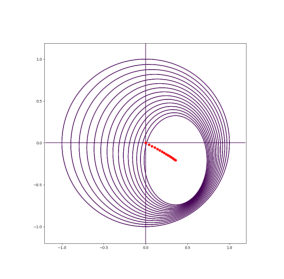
<figcaption class="paper-figure-caption"><b>Fig 1.</b> Fig. 4 Dynamics generated by illuminant channels. The time steps are t = i/10, i = 0, . . . , 14, and the parameters of the Lindblad matrix are as follows: α1,1 = 2, α2,2 = 1/3, α3,3 = 1, α1,3 = 1/7, and α2,3 = 1/5 (left), and α1,1 = 1/8, α2,2 = 1/4, α3,3 = 1/10, α1,3 = −1/20, and α2,3 = −1/10 (right).</figcaption>
</figure>
<figure class="paper-figure-card">
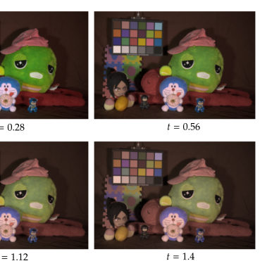
<figcaption class="paper-figure-caption"><b>Fig 2.</b> Fig. 5 The chromatic distortion induced by an illuminant channel. The weakly saturated orange illuminant is the stationary state (1/3, 0.2), α1,1 = 0.1, α2,2 = 0.25, and α3,3 = 0.15.</figcaption>
</figure>
<figure class="paper-figure-card">
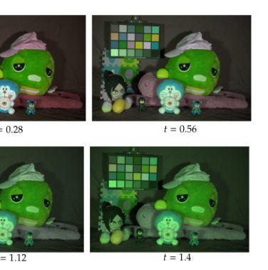
<figcaption class="paper-figure-caption"><b>Fig 3.</b> Fig. 6 The chromatic distortion induced by an illuminant channel. The strongly saturated green illuminant is the stationary state (−0.8, 0).</figcaption>
</figure>
<figure class="paper-figure-card">
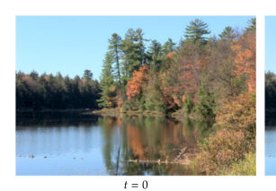
<figcaption class="paper-figure-caption"><b>Fig 4.</b> Fig. 7 The chromatic distortion induced by an opponency channel with α1,1 = 0.005, and α2,2 = 0.4.</figcaption>
</figure>
<figure class="paper-figure-card">
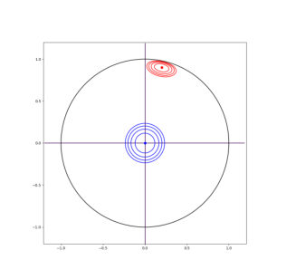
<figcaption class="paper-figure-caption"><b>Fig 5.</b> Fig. 8 Level sets of relative entropy µ = 0.01, 0.02, 0.03, 0.04. For the blue ones t = 0, for the red ones t = (0.2, 0.9) (left). Level sets of relative entropy µ = 0.02 for t = (0, 0), (0.2, 0.9), (0.3, 0.3), (−0.3, −0.5), and (−0.6, 0.7) (right).</figcaption>
</figure>
</div>

<p><strong>Summary.</strong> The paper develops a comprehensive mathematical classification of Markovian open quantum channels acting on two-state systems (rebits). It then applies this theory to color science, demonstrating that the effect of non-neutral light sources causes chromatic distortion by reducing the distinguishability between colors, which is quantified using relative entropy.</p>
<p><strong>Why it may be interesting.</strong> This work provides a rigorous quantum information framework (Markovian dynamics) to model complex biological phenomena like color vision, bridging abstract quantum physics with sensory neuroscience.</p>
<details>
<summary>Detailed structure</summary>
<p><strong>Main problem.</strong> The paper classifies Markovian dynamics for open two-state quantum systems (rebits) and applies this framework to model how illuminant changes cause chromatic distortion in human color perception.</p>
<p><strong>Main result.</strong> A general structure for Markovian rebit channels is derived, and the theory successfully models chromatic distortion by showing that non-neutral illuminants induce a measurable reduction in color distinguishability quantified by quantum relative entropy.</p>
<p><strong>Method.</strong> The authors use techniques from open quantum system theory, deriving structural properties of CPTP maps (channels) via the GKSL equation and applying these mathematical tools to psycho-physical models involving Lüders measurements.</p>
<p><strong>Model / system.</strong> The physical system is a single-rebit open quantum system whose state evolves under Markovian dynamics. The model uses the Bloch vector representation for rebit states, $
ho_s$, and relates channel evolution to established color vision models.</p>
<p><strong>Key observables.</strong> Chromatic distinguishability (quantified by relative entropy $R$), the Bloch vector components $(s_1, s_2)$, and the stationary state $\mathbf{v}_{s0}$.</p>
<p><strong>Important parameters / regimes.</strong> The decay rates ($\alpha_{i,j}$) derived from the Lindblad operators defining the illuminant channel; the Lorentz boost parameter $\gamma_e$.</p>
<p><strong>Assumptions / limitations.</strong> The analysis assumes continuous differentiability of the channel components and models color perception using a rebit state space parameterized by real numbers.</p>
<p><strong>Figures summary.</strong> Figures illustrate chromatic distortion caused by specific non-neutral illuminants (orange, green) and show how the level sets of relative entropy change over time, demonstrating reduced distinguishability.</p>
<p><strong>Paper structure.</strong> The paper first tackles the abstract mathematical classification of Markovian rebit channels using semigroup properties. It then transitions to applying this theory to color perception, deriving specific channel forms for illuminants and dysfunction models, and finally quantifying distortion via relative entropy.</p>
</details>
<details>
<summary>Abstract</summary>
<p>This paper investigates the Markovian dynamics of open two-state quantum systems defined over the real numbers (rebits). Two main objectives are pursued. First, we present a comprehensive classification of Markovian rebit quantum channels, i.e. one-parameter semigroups of completely positive, trace-preserving (CPTP) maps acting on the rebit state space. We show that a full characterisation of their action can be achieved and that describing these channels as solutions of the GKSL equation allows us to explicitly identify the associated Lindblad generators and conditions for complete positivity. Second, we present an original application of this classification to colour perception. Using a recent model in which perceived colours arise from Lüders measurements on the rebit state space, we show how chromatic distortion induced by a non-neutral illuminant can be modelled by a Markovian rebit channel that progressively diminishes colour distinguishability. Other types of channels could be used to study colour vision deficiencies. These phenomena are illustrated by simulations on digital images, highlighting the relevance of rebit Markovian dynamics in modelling colour vision.</p>
</details>
<p><sub><a href="#top">↑ back to top</a></sub></p>

<p><a id="paper-2606.08280"></a></p>
<h3 id="fidelity-susceptibility-and-geometric-response-in-flux-tuned-dirac-systems-exact-results-from-a-low-energy-two-level-reduction"><a href="http://arxiv.org/abs/2606.08280v1">Fidelity susceptibility and geometric response in flux-tuned Dirac systems: exact results from a low-energy two-level reduction</a></h3>
<p><strong>Authors:</strong> C. A. S. Almeida<br>
<strong>Type:</strong> theory · <strong>Category:</strong> statistical mechanics · <strong>PDF:</strong> <a href="https://arxiv.org/pdf/2606.08280v1">https://arxiv.org/pdf/2606.08280v1</a><br>
<strong>Analysis basis:</strong> full PDF text, analyzed in chunks
<strong>Topic relevance:</strong> <code>non-equilibrium universality</code> <strong>3/5</strong> · <code>driven-dissipative phase transition</code> <strong>2/5</strong> · <code>entanglement &amp; information structure</code> <strong>2/5</strong> · <code>Keldysh / 2PI / non-Gaussian methods</code> <strong>1/5</strong> · <code>Kondo &amp; dissipative impurity</code> <strong>1/5</strong> · <code>analog quantum simulation</code> <strong>1/5</strong> · <code>correlated / nonlocal dissipation</code> <strong>1/5</strong> · <code>methods for driven-dissipative</code> <strong>1/5</strong> · <code>non-equilibrium dynamics</code> <strong>1/5</strong></p>
<div class="figure-strip-hint">↔ Scroll figures horizontally</div>
<div class="paper-figures-scroll">
<figure class="paper-figure-card">
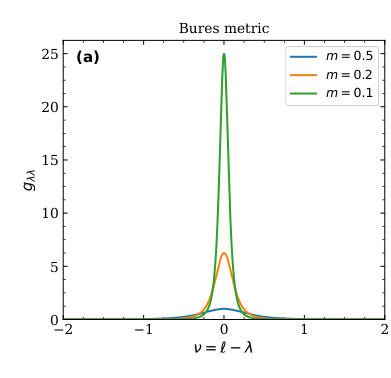
<figcaption class="paper-figure-caption"><b>Fig 1.</b> Figure 1: (a) Bures metric gλλ(ν) in the effective two-level model for m = 0.5, 0.2, and 0.1. The Lorentzian peak at ν = 0 scales as gmax λλ ∝m−2 and diverges in the chiral limit. (b) Normalized Bloch-sphere polar angle (2/π) arctan(ν/m) for the same masses. Since gλλ = 1 4(dθ/dν)2 (Sect. 7), the curvature of the ground-state trajectory on the Bloch sphere directly generates the Lorentzian profile in panel (a).</figcaption>
</figure>
<figure class="paper-figure-card">
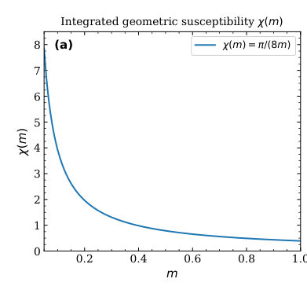
<figcaption class="paper-figure-caption"><b>Fig 2.</b> Figure 2: (a) Integrated Bures response χ(m) = π/(8m), representing the total geo- metric response of a single avoided crossing in the effective theory (Sect. 6). (b) Ge- ometric (paramagnetic) contribution 2gmax λλ = 1/(2m2) and diamagnetic contribution −∂2 λE− ν=0 = 1/m to the peak persistent current susceptibility at ν = 0, as functions of m. The shaded region marks the geometric excess; for m &lt; 1/2 the Bures metric dom- inates the total susceptibility.</figcaption>
</figure>
</div>

<p><strong>Summary.</strong> This theoretical work analyzes the parametric sensitivity of flux-tuned Dirac fermions by employing the Bures metric. The authors derive an exact result showing that the integrated geometric susceptibility scales universally as $1/m$, mirroring critical divergences. This establishes a direct link between information geometry and measurable physical responses like persistent currents in mesoscopic systems.</p>
<p><strong>Why it may be interesting.</strong> The connection between information geometry (Bures metric) and measurable transport properties like persistent currents provides a powerful, non-standard tool to characterize quantum critical behavior in condensed matter systems.</p>
<details>
<summary>Detailed structure</summary>
<p><strong>Main problem.</strong> The study quantifies the parametric sensitivity of quantum systems using information geometry, specifically by analyzing the Bures metric (fidelity susceptibility) in flux-tuned Dirac fermions.</p>
<p><strong>Main result.</strong> The integrated geometric susceptibility exhibits an exact universal Lorentzian profile with inverse-mass scaling ($\chi(m) \sim 1/m$), mirroring critical power-law divergences near gap closing.</p>
<p><strong>Method.</strong> The authors use a controlled low-energy projection of the full Dirac Hamiltonian onto an effective two-level subspace to derive closed-form expressions for the Bures metric and its integral susceptibility.</p>
<p><strong>Model / system.</strong> The system is modeled by 2D massive Dirac fermions subjected to an Aharonov-Bohm flux. The analysis is simplified using an effective two-level Hamiltonian, $H_{    ext{eff}}(
u) = 
u \sigma_x + m \sigma_z$, valid near integer flux.</p>
<p><strong>Key observables.</strong> Bures metric (fidelity susceptibility), integrated geometric susceptibility $\chi(m)$, and the paramagnetic contribution to persistent current susceptibility.</p>
<p><strong>Important parameters / regimes.</strong> Dirac mass ($m$), reduced Aharonov-Bohm flux ($\lambda$), and the chiral limit ($m 	o 0$).</p>
<p><strong>Assumptions / limitations.</strong> The analysis relies on a low-energy projection onto an effective two-level subspace, which is valid in the vicinity of integer flux values.</p>
<p><strong>Figures summary.</strong> Figures illustrate the Lorentzian peak of the Bures metric $g_{\lambda\lambda}(
u)$ near $
u=0$ and plot the integrated susceptibility $\chi(m) = \pi/(8m)$, comparing geometric vs. diamagnetic contributions to total susceptibility.</p>
<p><strong>Paper structure.</strong> The paper first introduces the use of the Bures metric for parametric sensitivity in Dirac systems, derives an effective two-level Hamiltonian near integer flux, and then calculates the exact closed-form expressions for both the local (Lorentzian) and integrated ($\chi(m)$) geometric susceptibilities.</p>
</details>
<details>
<summary>Abstract</summary>
<p>We study the parametric sensitivity of two-dimensional massive Dirac fermions subject to Aharonov-Bohm flux insertion, using the Bures metric (fidelity susceptibility) as the central statistical-mechanical response function. Near integer values of the reduced flux, the low-energy spectrum undergoes a flux-induced avoided crossing whose structure is controlled by the Dirac mass. Through a controlled low-energy projection of the full Dirac=Aharonov-Bohm operator onto an effective two-level subspace, valid near integer flux, we derive an exact closed-form expression for the ground-state Bures metric, which takes a universal Lorentzian profile centered at integer flux with width set by the mass parameter. The peak value scales as $g^{\max}_{λλ}\sim m^{-2}$, diverging in the chiral limit in direct analogy with the divergence of thermodynamic susceptibilities near critical points. We introduce an integrated geometric susceptibility $χ(m) = π/(8m)$, whose inverse-mass scaling is the information-geometric counterpart of power-law critical behavior, with the Dirac mass playing the role of a relevant coupling controlling the distance from the chiral fixed point. The Lorentzian profile is shown to arise from the curvature of the ground-state manifold on the Bloch sphere, requiring no dynamical input beyond the spectral structure. Importantly, this geometric response is independent of Berry curvature and topological invariants, emerging instead from a universal local spectral mechanism. Through its spectral representation, the Bures metric is identified as the geometric (paramagnetic) contribution to the persistent current susceptibility, encoding the sensitivity of persistent currents and orbital magnetization to flux variations and connecting information geometry to measurable response functions in mesoscopic Dirac systems.</p>
</details>
<p><sub><a href="#top">↑ back to top</a></sub></p>

<p><a id="paper-2606.09781"></a></p>
<h3 id="topological-defects-and-scalar-field-modes-in-warped-geometries"><a href="http://arxiv.org/abs/2606.09781v1">Topological defects and scalar field modes in warped geometries</a></h3>
<p><strong>Authors:</strong> A. A. Saharian, E. L. Karapetyan, G. V. Mirzoyan<br>
<strong>Type:</strong> theory · <strong>Category:</strong> other · <strong>PDF:</strong> <a href="https://arxiv.org/pdf/2606.09781v1">https://arxiv.org/pdf/2606.09781v1</a><br>
<strong>Analysis basis:</strong> full PDF text, analyzed in chunks
<strong>Topic relevance:</strong> <code>Keldysh / 2PI / non-Gaussian methods</code> <strong>3/5</strong> · <code>analog quantum simulation</code> <strong>2/5</strong> · <code>entanglement &amp; information structure</code> <strong>2/5</strong> · <code>non-equilibrium dynamics</code> <strong>2/5</strong> · <code>correlated / nonlocal dissipation</code> <strong>1/5</strong> · <code>driven-dissipative phase transition</code> <strong>1/5</strong> · <code>methods for driven-dissipative</code> <strong>1/5</strong> · <code>non-equilibrium universality</code> <strong>1/5</strong></p>
<div class="figure-strip-hint">↔ Scroll figures horizontally</div>
<div class="paper-figures-scroll">
<figure class="paper-figure-card">
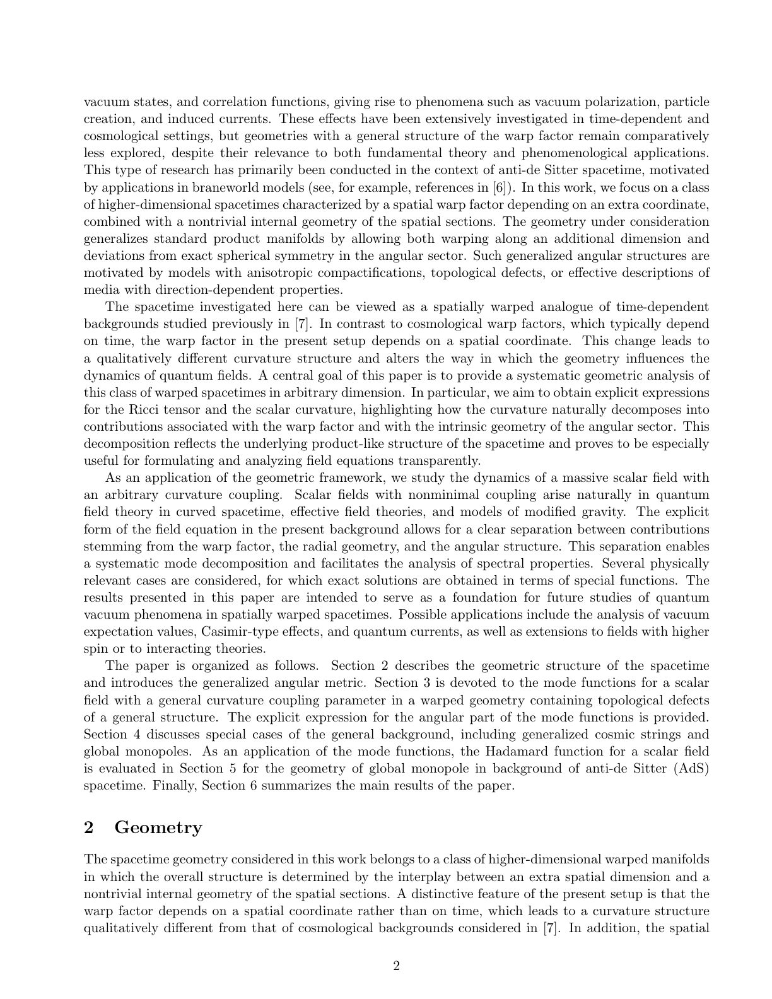
<figcaption class="paper-figure-caption"><b>Fig 1.</b> Low-resolution page preview, page 2</figcaption>
</figure>
<figure class="paper-figure-card">
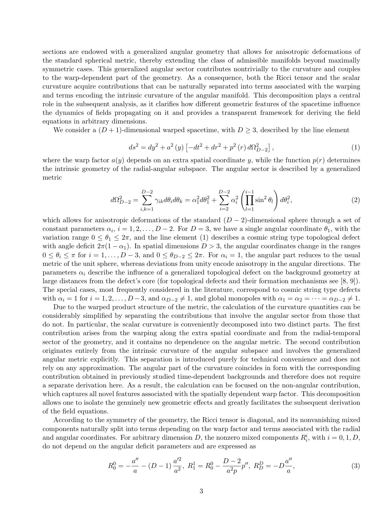
<figcaption class="paper-figure-caption"><b>Fig 2.</b> Low-resolution page preview, page 3</figcaption>
</figure>
<figure class="paper-figure-card">
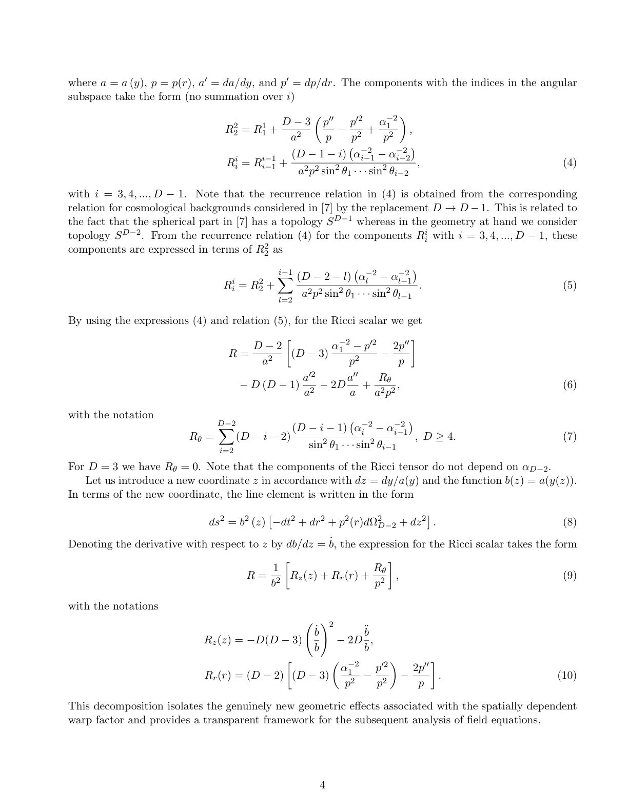
<figcaption class="paper-figure-caption"><b>Fig 3.</b> Low-resolution page preview, page 4</figcaption>
</figure>
<figure class="paper-figure-card">
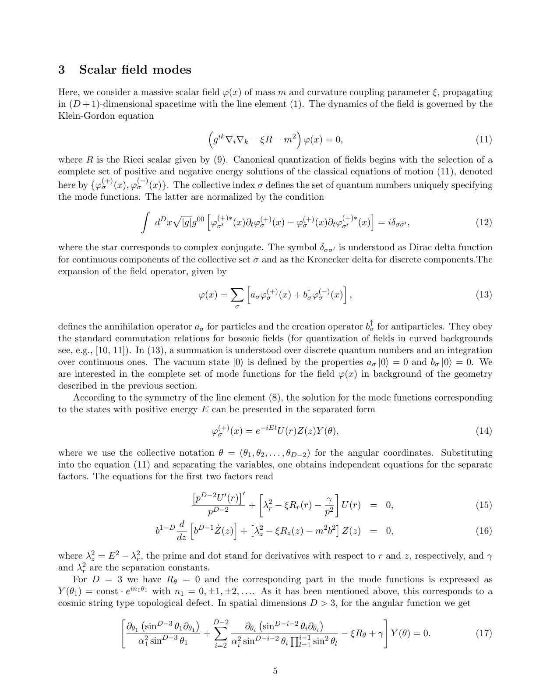
<figcaption class="paper-figure-caption"><b>Fig 4.</b> Low-resolution page preview, page 5</figcaption>
</figure>
<figure class="paper-figure-card">
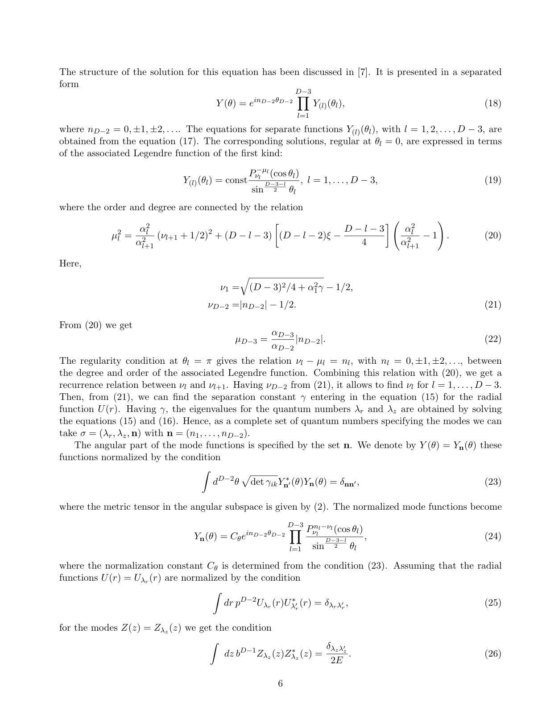
<figcaption class="paper-figure-caption"><b>Fig 5.</b> Low-resolution page preview, page 6</figcaption>
</figure>
</div>

<p><strong>Summary.</strong> This theoretical paper investigates quantum scalar fields in curved spacetimes containing topological defects like cosmic strings. By developing a general framework based on geometric decomposition, the authors solve the field equation using separation of variables. The ultimate goal is to calculate the vacuum correlation function (Hadamard two-point function) for these exotic physical setups.</p>
<p><strong>Why it may be interesting.</strong> While focused on gravity/QFT, the mathematical techniques—solving separated differential equations with complex boundary conditions and deriving correlation functions—are highly relevant to open quantum systems and many-body physics where geometry or external fields modify standard Hamiltonians.</p>
<details>
<summary>Detailed structure</summary>
<p><strong>Main problem.</strong> The research develops a general framework to study how topological defects influence quantum scalar fields propagating within warped spacetime geometries.</p>
<p><strong>Main result.</strong> The authors derive explicit forms for the Hadamard two-point function in specific defect backgrounds, such as global monopoles and cosmic strings embedded in AdS spacetime.</p>
<p><strong>Method.</strong> The methodology involves decomposing geometric tensors (like the Ricci tensor) and separating the resulting field equation into independent radial, angular, and warp-coordinate parts to solve for mode functions.</p>
<p><strong>Model / system.</strong> The system is a massive scalar field propagating on a $(D+1)$-dimensional warped spacetime background that incorporates anisotropic deformations due to topological defects. The geometry is characterized by warp factors and generalized metrics.</p>
<p><strong>Key observables.</strong> The Hadamard two-point function G(x, x'), the mode functions $\phi_\sigma(x)$, and components of the Ricci tensor ($R_{ii}$).</p>
<p><strong>Important parameters / regimes.</strong> Curvature coupling parameter ($\xi$), mass $m$, warp factor parameters, and angular deficit parameters ($\alpha_i$).</p>
<p><strong>Assumptions / limitations.</strong> The analysis assumes symmetries that allow for the separation of variables in the field equation; specific boundary conditions are used to determine mode quantization.</p>
<p><strong>Figures summary.</strong> Not specified (Bibliography section provided).</p>
<p><strong>Paper structure.</strong> The paper progresses by first establishing a general formalism for curvature decomposition, then applying this to separate the scalar field equation into solvable components, and finally calculating the two-point function for specific defect models like global monopoles in AdS.</p>
</details>
<details>
<summary>Abstract</summary>
<p>We develop a general framework for investigating the influence of topological defects on the local characteristics of a quantum scalar field in a warped geometry background. The Ricci tensor and curvature scalar are decomposed into contributions from the warp factor, the radial geometry and the angular defect structure. For an arbitrary curvature coupling parameter, the field equation is separated into independent radial, angular and warp-coordinate parts. A complete set of normalized mode functions is obtained for general values of the angular deficit parameters. The general formalism is applied to several specific cases, such as conformally flat warped spacetimes, generalized cosmic strings, global monopoles and anti-de Sitter (AdS)-type warped geometries. The Hadamard two-point function is then evaluated for a global monopole in AdS spacetime using the obtained mode functions.</p>
</details>
<p><sub><a href="#top">↑ back to top</a></sub></p>

<p><a id="paper-2606.08613"></a></p>
<h3 id="inhomogeneous-coulomb-models-without-defects-are-sick-domain-wall-energies-scaling-as-volume-not-boundary-area"><a href="http://arxiv.org/abs/2606.08613v1">Inhomogeneous Coulomb Models Without Defects are Sick: Domain Wall Energies Scaling as Volume (not Boundary Area)</a></h3>
<p><strong>Authors:</strong> Garry Goldstein<br>
<strong>Type:</strong> theory · <strong>Category:</strong> statistical mechanics · <strong>PDF:</strong> <a href="https://arxiv.org/pdf/2606.08613v1">https://arxiv.org/pdf/2606.08613v1</a><br>
<strong>Analysis basis:</strong> full PDF text, analyzed in chunks
<strong>Topic relevance:</strong> <code>analog quantum simulation</code> <strong>3/5</strong> · <code>non-equilibrium dynamics</code> <strong>2/5</strong> · <code>Keldysh / 2PI / non-Gaussian methods</code> <strong>1/5</strong> · <code>correlated / nonlocal dissipation</code> <strong>1/5</strong> · <code>driven-dissipative phase transition</code> <strong>1/5</strong> · <code>entanglement &amp; information structure</code> <strong>1/5</strong> · <code>exotic spin models in light-matter</code> <strong>1/5</strong> · <code>methods for driven-dissipative</code> <strong>1/5</strong> · <code>non-equilibrium universality</code> <strong>1/5</strong></p>
<div class="figure-strip-hint">↔ Scroll figures horizontally</div>
<div class="paper-figures-scroll">
<figure class="paper-figure-card">
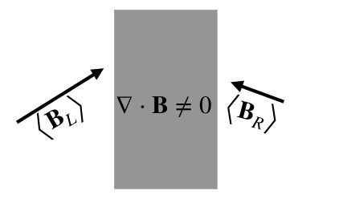
<figcaption class="paper-figure-caption"><b>Fig 1.</b> Figure 1. The main idea about non-vanishing divergence. By the divergence theorem there are defects between different phases or there are macroscopic changes to the system state.</figcaption>
</figure>
<figure class="paper-figure-card">
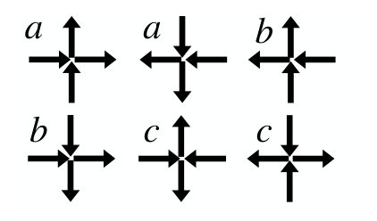
<figcaption class="paper-figure-caption"><b>Fig 2.</b> Figure 2. The six vertex configurations along with their Boltzmann weights.</figcaption>
</figure>
<figure class="paper-figure-card">
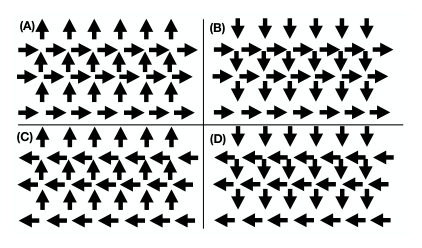
<figcaption class="paper-figure-caption"><b>Fig 3.</b> Figure 3. The four configurations most relevant to the case where ∆&gt; 1.</figcaption>
</figure>
<figure class="paper-figure-card">
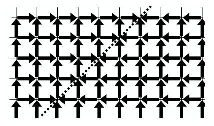
<figcaption class="paper-figure-caption"><b>Fig 4.</b> Figure 4. Non-compatible domain wall for six vertex model.</figcaption>
</figure>
<figure class="paper-figure-card">
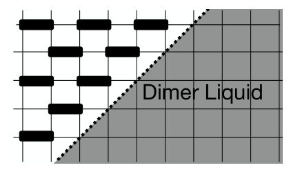
<figcaption class="paper-figure-caption"><b>Fig 5.</b> Figure 5. Non-compatible dimer domain wall.</figcaption>
</figure>
</div>

<p><strong>Summary.</strong> This work demonstrates a fundamental pathology in Coulomb lattice models: domain walls cost energy proportional to system volume rather than just boundary area. The authors prove this using the six vertex model and show that even when macroscopic constraints are met, boundaries impose extensive free energy costs, highlighting the critical role of boundary conditions in these systems.</p>
<p><strong>Why it may be interesting.</strong> While focused on condensed matter statistical mechanics, the concept of boundary-induced extensive energy costs is relevant for understanding finite-size effects in quantum simulations or open quantum systems where boundary conditions are crucial.</p>
<details>
<summary>Detailed structure</summary>
<p><strong>Main problem.</strong> The authors investigate pathological behavior in Coulomb models where domain wall energies scale extensively with system volume rather than merely with boundary area, even when macroscopic constraints are satisfied.</p>
<p><strong>Main result.</strong> Generic domain walls cost energy proportional to the system volume, and even boundaries satisfying $
abla \cdot B \cdot n = 0$ can impose an extensive free energy cost on the Helmholtz free energy.</p>
<p><strong>Method.</strong> The analysis uses theoretical techniques applied to exactly solvable lattice models, comparing partition functions under different boundary conditions (periodic vs. domain wall).</p>
<p><strong>Model / system.</strong> The study applies to general lattice systems obeying a divergence-free constraint ($
abla \cdot \langle B 
angle = 0$), with specific examples including the square lattice six vertex model, quantum dimers, and classical spin ice.</p>
<p><strong>Key observables.</strong> Domain wall energy scaling (Volume vs. Area), Helmholtz free energy cost, monopole density, and partition functions for different boundary conditions.</p>
<p><strong>Important parameters / regimes.</strong> The divergence-free constraint ($
abla \cdot \langle B 
angle = 0$), the ratio of ground state pseudo-magnetic fields across a domain wall ($\left\langle \mathbf{B}<em L>{R}
ight
angle -\left\langle \mathbf{B}</em>
ight
angle$), and temperature/coupling constants.</p>
<p><strong>Assumptions / limitations.</strong> The analysis relies on coarse-graining variables $\langle B 
angle$ related to microscopic degrees of freedom, and the comparison between different boundary condition ensembles (periodic vs. domain wall).</p>
<p><strong>Figures summary.</strong> Figures illustrate non-vanishing divergence at interfaces, six vertex configurations for the model, and comparisons of partition functions under various boundary conditions.</p>
<p><strong>Paper structure.</strong> The paper establishes the general problem using Coulomb models, analyzes specific examples like the six vertex model to demonstrate volume scaling pathologies, and concludes by showing that even seemingly compatible boundaries have thermodynamic consequences.</p>
</details>
<details>
<summary>Abstract</summary>
<p>In this work we show that coulomb models, ones that obey a $\nabla\cdot\left\langle \mathbf{B}\right\rangle =0$ divergence free constraint - for $\left\langle \mathbf{B}\right\rangle $ being some coarse grained variables related to the microscopic degrees of freedom of the lattice system - are sick without the inclusion of defects with $\nabla\cdot\mathbf{B}\neq0$. We show that for generic boundaries (ones where the fluxes of the pseudo-magnetic fields on the boundary do not cancel: $\left(\left\langle \mathbf{B}_{R}\right\rangle -\left\langle \mathbf{B}_{L}\right\rangle \right)\cdot\mathbf{n}\neq0$ - here $\mathbf{n}$ is the unit normal and $\left\langle \mathbf{B}_{R/L}\right\rangle $ are the two ground state pseudo-magnetic fields on either side of the domain wall) without the inclusion of defects, sharp domain walls (on the order of the width of a unit cell) between different phases of the system cost energy proportional to system size (not boundary area). We present several different examples of this phenomena in the square lattice six vertex model, in quantum dimers and in classical spin ice in the presence of magnetic fields. We also show by example that the condition $\left(\left\langle \mathbf{B}_{R}\right\rangle -\left\langle \mathbf{B}_{L}\right\rangle \right)\cdot\mathbf{n}=0$ is a necessary but not sufficient condition for the boundaries to be compatible - that is domain wall energy to scale with domain wall area and not system size. To further present the importance of boundary conditions in Coulomb systems we show that system boundaries, even ones that satisfy $\int_{\partial V}\mathbf{B}\cdot\mathbf{n}=0$, have thermodynamic consequences - that is there is a cost, extensive in system size, to the Helmholtz free energy.</p>
</details>
<p><sub><a href="#top">↑ back to top</a></sub></p>

<p><a id="paper-2606.08540"></a></p>
<h3 id="shear-banding-in-amorphous-solids-as-a-nonlinear-screened-soft-mode-instability"><a href="http://arxiv.org/abs/2606.08540v1">Shear Banding in Amorphous Solids as a Nonlinear Screened Soft Mode Instability</a></h3>
<p><strong>Authors:</strong> Yang Fu, Yuliang Jin, Avanish Kumar, Itamar Procaccia<br>
<strong>Type:</strong> both · <strong>Category:</strong> statistical mechanics · <strong>PDF:</strong> <a href="https://arxiv.org/pdf/2606.08540v1">https://arxiv.org/pdf/2606.08540v1</a><br>
<strong>Analysis basis:</strong> full PDF text, analyzed in chunks
<strong>Topic relevance:</strong> <code>non-equilibrium universality</code> <strong>3/5</strong> · <code>driven-dissipative phase transition</code> <strong>2/5</strong> · <code>non-equilibrium dynamics</code> <strong>2/5</strong> · <code>Frenkel-Kontorova</code> <strong>1/5</strong> · <code>Keldysh / 2PI / non-Gaussian methods</code> <strong>1/5</strong> · <code>analog quantum simulation</code> <strong>1/5</strong> · <code>correlated / nonlocal dissipation</code> <strong>1/5</strong> · <code>methods for driven-dissipative</code> <strong>1/5</strong></p>
<div class="figure-strip-hint">↔ Scroll figures horizontally</div>
<div class="paper-figures-scroll">
<figure class="paper-figure-card">
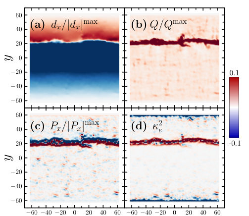
<figcaption class="paper-figure-caption"><b>Fig 1.</b> FIG. 2. Panel (a): the normalized displacement compo- nent parallel to the shear band. Panel (b): the normalized quadrupole charge, Q, defined as Q = p</figcaption>
</figure>
<figure class="paper-figure-card">
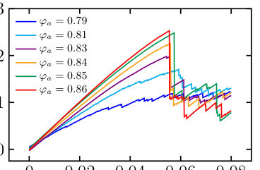
<figcaption class="paper-figure-caption"><b>Fig 2.</b> FIG. 1. The background shear stress Σxy versus strain γ curves with different initial annealing conditions (φa), for N = 16000 Hertzian particles.</figcaption>
</figure>
<figure class="paper-figure-card">
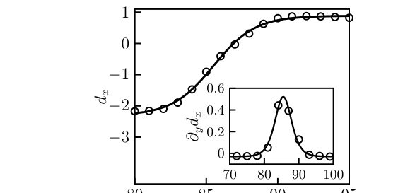
<figcaption class="paper-figure-caption"><b>Fig 3.</b> FIG. 3. Fitting the simulation profile of dx(y) to the theoret- ical prediction Eq. (11) (line). Inset: comparing the data of shear localization to the theoretical prediction Eq. (15) with a trivial shift constant.</figcaption>
</figure>
<figure class="paper-figure-card">
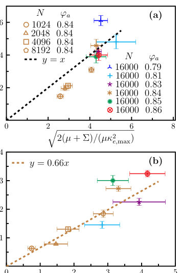
<figcaption class="paper-figure-caption"><b>Fig 4.</b> FIG. 5. Examination of Eq. (12) (panel a), and Eq. (13) (panel b) using simulation data for WCA systems.</figcaption>
</figure>
<figure class="paper-figure-card">
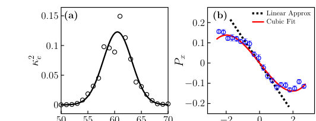
<figcaption class="paper-figure-caption"><b>Fig 5.</b> FIG. 4. Panel (a): The profile of κ2 e in the shear band is fitted by a Gaussian function to determine the peak value κe,max , with κ2 e calculated using the linear constitutive re- lation Eq. (14). Panel (b): Px vs. dx in the shear band within 58 &lt; y &lt; 63, fitted to Eq. (16), giving A/µ ≈1.04 and B ≈0.0088 (red solid line). The black dashed line represents A/µ ≈1.2 obtained from panel (a).</figcaption>
</figure>
</div>

<p><strong>Summary.</strong> This work theoretically and numerically analyzes shear banding in amorphous solids, proposing that this mechanical failure mode is not a simple fracture but rather a nonlinear instability mediated by topological screening. By simulating atomic models under shear, the authors confirm that the finite width of the resulting shear band is quantitatively determined by this screening mechanism.</p>
<p><strong>Why it may be interesting.</strong> While focused on condensed matter mechanics, the concept of an instability being governed by a 'screening' mechanism analogous to those studied in quantum field theory or plasma physics provides a rich analogy for understanding non-equilibrium phase transitions in complex many-body systems.</p>
<details>
<summary>Detailed structure</summary>
<p><strong>Main problem.</strong> The paper investigates shear banding, a mechanical instability in amorphous solids, by developing and numerically testing a nonlinear theory that incorporates plastic deformations as topological charges.</p>
<p><strong>Main result.</strong> Shear banding is fundamentally established as a screened soft-mode instability, where the finite localization scale of the band is governed by topological screening rather than classical elasticity.</p>
<p><strong>Method.</strong> The authors combine theoretical derivation (using nonlinear Lagrangian methods) with extensive numerical simulations on atomic models to verify quantitative predictions for the shear band width and amplitude.</p>
<p><strong>Model / system.</strong> The study uses amorphous solids simulated via molecular dynamics using various repulsive potentials (harmonic, Hertzian, WCA) under athermal quasistatic shearing conditions.</p>
<p><strong>Key observables.</strong> Accumulated stress ($\Sigma_{xy}$) vs. strain ($\gamma$), displacement profiles ($d_x(y)$), quadrupolar charge density ($Q$), and the screening parameter ($\kappa_e^2$).</p>
<p><strong>Important parameters / regimes.</strong> The screening length ($\ell \sim 1/\kappa_e$) and nonlinear coefficients derived from the instability equations are crucial for characterizing the band.</p>
<p><strong>Assumptions / limitations.</strong> The analysis often relies on simplifying assumptions, such as fixing boundary conditions or using a 1D projection approximation for the displacement field to match theoretical models to simulations.</p>
<p><strong>Figures summary.</strong> Figures show stress-strain curves exhibiting shear localization, spatial maps of charge densities concentrated in bands, and quantitative fits comparing simulated displacement profiles and screening parameters against theoretical predictions.</p>
<p><strong>Paper structure.</strong> The paper progresses from establishing the general nonlinear theory for instability (soft mode analysis) to applying this framework numerically using atomic simulations across different potentials, culminating in a demonstration that topological screening dictates the finite width of the shear band.</p>
</details>
<details>
<summary>Abstract</summary>
<p>Shear banding is a well-known and widespread instability in strained solids: under external strain, the deformation localizes along a line in two dimensions or a plane in three dimensions. Developing a proper theoretical description of this phenomenon is key to understanding mechanical failure in solid materials. Very recently, a nonlinear theory extending classical elasticity to include plastic deformations as topological charges was proposed, offering detailed predictions on the nature and consequences of the shear-banding instability. The theory derives a Hessian operator whose lowest eigenvalue vanishes at the onset of instability, and the corresponding critical eigenmode describes the displacement field across the shear band. The resulting soft mode possesses the selected localization scale and subsequently saturates into a finite-width shear band. The aim of this Letter is to examine this theory numerically, establishing the role of topological screening and nonlinear instability as the mechanisms governing shear banding during athermal quasistatic deformation. We show that the displacement profile around the shear band is directly determined by the screening parameter and the nonlinear coefficient, thereby quantitatively verifying the theoretical predictions. Our results demonstrate that shear banding differs fundamentally from fracture: it arises from a nonlinear instability of an elastic field screened by plastic deformations. This establishes topological screening as the essential mechanism governing shear banding in amorphous solids.</p>
</details>
<p><sub><a href="#top">↑ back to top</a></sub></p>

<p><a id="paper-2606.08794"></a></p>
<h3 id="graph-neural-networks-for-fast-operator-selection-in-adaptive-vqe"><a href="http://arxiv.org/abs/2606.08794v1">Graph Neural Networks for Fast Operator Selection in Adaptive VQE</a></h3>
<p><strong>Authors:</strong> Javad Vahedi, Hadi H. Arefi<br>
<strong>Type:</strong> theory · <strong>Category:</strong> disordered systems and neural networks · <strong>PDF:</strong> <a href="https://arxiv.org/pdf/2606.08794v1">https://arxiv.org/pdf/2606.08794v1</a><br>
<strong>Analysis basis:</strong> full PDF text, analyzed in chunks
<strong>Topic relevance:</strong> <code>analog quantum simulation</code> <strong>3/5</strong> · <code>methods for driven-dissipative</code> <strong>3/5</strong> · <code>quantum measurements</code> <strong>2/5</strong> · <code>entanglement &amp; information structure</code> <strong>1/5</strong> · <code>exotic spin models in light-matter</code> <strong>1/5</strong> · <code>non-equilibrium dynamics</code> <strong>1/5</strong></p>
<div class="figure-strip-hint">↔ Scroll figures horizontally</div>
<div class="paper-figures-scroll">
<figure class="paper-figure-card">
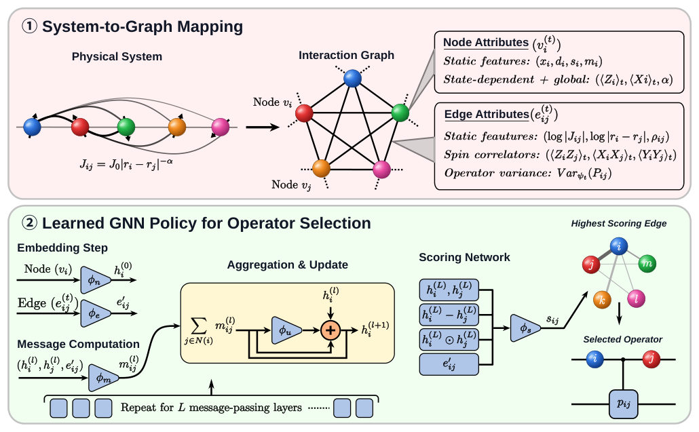
<figcaption class="paper-figure-caption"><b>Fig 1.</b> FIG. 1. Schematic of the graph-based representation and learned GNN policy used for adaptive operator selection in the long-range spin-system setting studied in this work. 1. System-to-graph mapping: The disordered spin chain is represented as an interaction graph in which nodes v(t) i correspond to spins and edges e(t) ij correspond to candidate two-qubit generators Pij. Node features combine static geometric quantities with state-dependent observables, while edge features combine static interaction information, two-spin correlators, and operator-variance information. 2. Learned GNN policy for operator selection: Node and edge features are first embedded into latent representations using...</figcaption>
</figure>
<figure class="paper-figure-card">
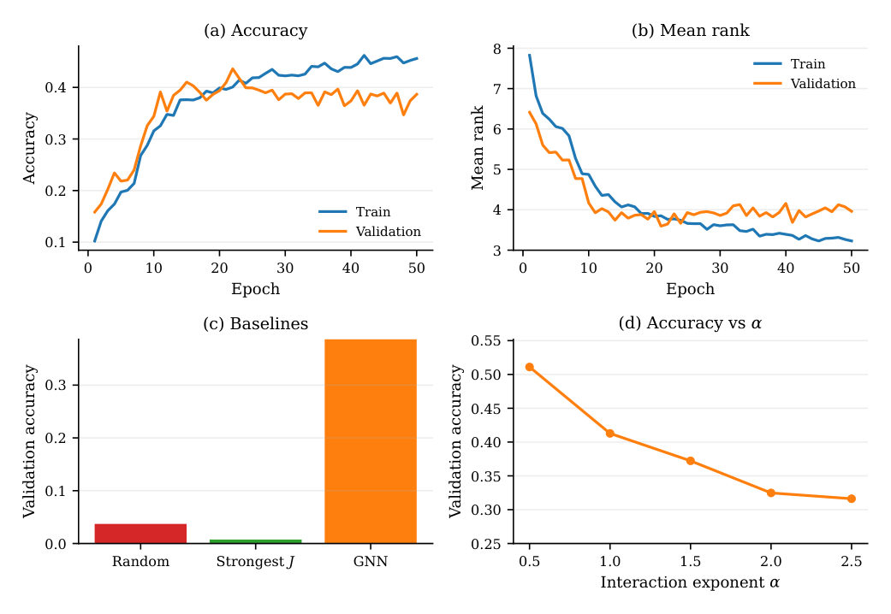
<figcaption class="paper-figure-caption"><b>Fig 2.</b> FIG. 2. Training dynamics and operator-selection performance of the learned GNN policy. (a) Training and validation accuracy during optimization of the pointer-based graph neural network. The model is trained to predict the operator with the largest gradient magnitude based on the interaction graph and state-dependent observables. (b) Mean rank of the correct operator among all candidate edges during training. Lower values indicate better agreement with the greedy gradient oracle used to generate supervision labels. (c) Comparison with simple baselines. The learned policy significantly outperforms both random edge selection and a heuristic that always selects the strongest coupling Jij. (d)...</figcaption>
</figure>
<figure class="paper-figure-card">
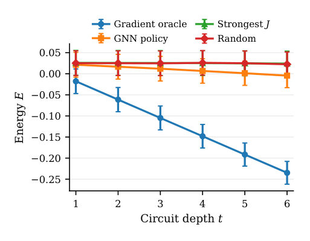
<figcaption class="paper-figure-caption"><b>Fig 3.</b> FIG. 3. Energy expectation value as a function of circuit depth t across different operator-selection strategies, averaged over disordered long-range spin chain realizations. The trajec- tories represent a discrete rollout using the fixed small-angle update rule (θ) from dataset generation prior to global pa- rameter reoptimization. The learned GNN policy consistently outperforms both the random and static strongest-coupling baselines. A visible performance gap remains relative to the exact gradient oracle, which utilizes perfect local commuta- tor information. Error bars denote the standard error across disorder realizations.</figcaption>
</figure>
<figure class="paper-figure-card">
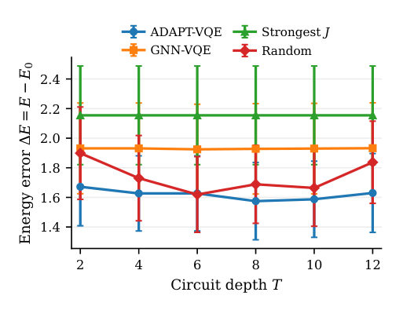
<figcaption class="paper-figure-caption"><b>Fig 4.</b> FIG. 4. Energy error ∆E = E −E0 as a function of circuit depth T for different operator-selection strategies after full variational reoptimization of circuit parameters. This figure therefore probes the quality of the compiled ansatz topology induced by each selection strategy, rather than the quality of the intermediate rollout trajectory shown in Fig. 3. ADAPT- VQE achieves the lowest energy error by selecting operators using gradient information at each iteration. The GNN-VQE approach replaces this gradient evaluation with a learned pol- icy based on graph-structured features. While the resulting circuits exhibit larger energy errors than those obtained with ADAPT-VQE, the learned policy...</figcaption>
</figure>
<figure class="paper-figure-card">
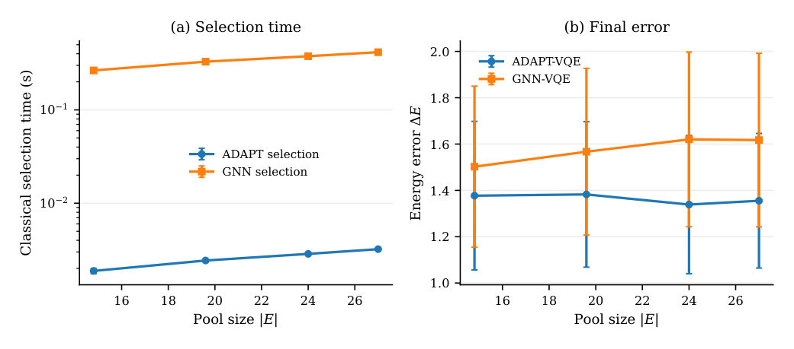
<figcaption class="paper-figure-caption"><b>Fig 5.</b> FIG. 5. Scaling of adaptive circuit construction with operator pool size |E|. (a): Time required to select T operators during circuit construction. ADAPT-VQE evaluates the commutator gradient for every operator in the pool, leading to a selection cost that increases approximately linearly with |E|. The GNN-based policy predicts the next operator via a neural-network forward pass, replacing explicit gradient scans by classical inference. In the present small-scale classical simulations, however, the measured wall-clock selection time remains larger than ADAPT-VQE due to graph-construction and inference overhead, even though the qualitative dependence on |E| is similar. (b): Energy error ∆E =...</figcaption>
</figure>
</div>

<p><strong>Summary.</strong> The paper introduces using Graph Neural Networks (GNNs) to accelerate Adaptive VQE by learning which quantum operators are most likely to improve the ground state energy. By predicting these operators from the system's interaction graph instead of exhaustively checking every possibility, it significantly reduces classical computational overhead while maintaining high accuracy.</p>
<p><strong>Why it may be interesting.</strong> This work directly addresses the scaling bottleneck in quantum algorithms by replacing expensive physical measurements (gradient evaluations) with fast classical inference, a crucial step for applying VQE to large, complex systems relevant to AMO physics.</p>
<details>
<summary>Detailed structure</summary>
<p><strong>Main problem.</strong> The primary challenge is mitigating the classical computational bottleneck associated with repeatedly scanning a large operator pool during adaptive quantum circuit construction in VQE.</p>
<p><strong>Main result.</strong> A Graph Neural Network (GNN) policy can learn to predict the optimal next entangling operator, achieving energy errors competitive with full gradient-based methods while drastically reducing the required classical overhead.</p>
<p><strong>Method.</strong> The authors reformulate adaptive operator selection as a graph decision problem, training a GNN on simulated gradient magnitudes derived from quantum state evolution. The trained GNN acts as an efficient shortlist generator for subsequent exact rescoring.</p>
<p><strong>Model / system.</strong> The work is initially developed using disordered long-range spin chains with power-law decaying interactions ($J_{ij} \propto |r_i - r_j|^{-\alpha}$). It is later benchmarked on small molecular active spaces (LiH, BeH2) mapped to qubit Hamiltonians.</p>
<p><strong>Key observables.</strong> Energy expectation value ($\Delta E$), Mean Rank of the selected operator, and computational scaling complexity relative to pool size $|E|$.</p>
<p><strong>Important parameters / regimes.</strong> Interaction decay exponent $\alpha$, circuit depth $T$, and the number/size of candidate operators in the pool.</p>
<p><strong>Assumptions / limitations.</strong> The core assumption is that the process of adaptive circuit construction contains a learnable, exploitable structure that can be approximated by graph message passing. The GNN acts as a shortlist generator rather than a perfect oracle replacement.</p>
<p><strong>Figures summary.</strong> Figures compare energy error vs. depth for various selection strategies (Gradient Oracle vs. GNN vs. Heuristics) and show the computational scaling advantage of the GNN approach over full gradient evaluations.</p>
<p><strong>Paper structure.</strong> The paper introduces the problem, details the graph representation of the Hamiltonian/operators, describes the GNN architecture trained on simulated gradients from spin chains, validates performance against heuristics, and concludes with transferability tests on molecular benchmarks.</p>
</details>
<details>
<summary>Abstract</summary>
<p>Adaptive variational quantum algorithms like ADAPT-VQE construct tailored ansätze by iteratively selecting operators from a pool using gradient-based criteria. While this avoids oversized parameter spaces, repeatedly scanning the full pool incurs a classical cost that scales linearly with pool size-a major bottleneck for systems with long-range interactions or large operator sets. Here, we reformulate adaptive operator selection as a graph-based decision problem and introduce a graph neural network (GNN) policy that predicts the next entangling operator directly from the interaction graph and state-dependent observables. Training data are generated from exact simulations of disordered long-range spin chains, using gradient magnitudes as supervision signals. The learned policy accurately reproduces the dominant structure of the greedy gradient-based selection rule, significantly outperforming heuristics based solely on interaction strength. Integrated into a variational quantum eigensolver (VQE) workflow, this GNN-VQE approach achieves energy errors close to standard ADAPT-VQE while drastically reducing full-pool gradient evaluations. To test transferability beyond spin models, we evaluate the policy on small active-space molecular benchmarks (LiH and BeH_$2$). We find the GNN is highly effective as a shortlist generator: exact rescoring over just a few GNN-proposed candidates recovers near-oracle rollout behavior while searching only a small fraction of the pool. These results demonstrate that adaptive circuit construction contains learnable structure that can be exploited to accelerate variational quantum algorithms.</p>
</details>
<p><sub><a href="#top">↑ back to top</a></sub></p>

<p><a id="paper-2606.08874"></a></p>
<h3 id="impact-of-gate-voltage-noise-on-silicon-spin-qubit-variational-quantum-eigensolvers"><a href="http://arxiv.org/abs/2606.08874v1">Impact of gate-voltage noise on silicon spin-qubit variational quantum eigensolvers</a></h3>
<p><strong>Authors:</strong> Xinning Wang, Bohdan Khromets, Zachery Merino, Jonathan Baugh<br>
<strong>Type:</strong> theory · <strong>Category:</strong> quantum information and computing · <strong>PDF:</strong> <a href="https://arxiv.org/pdf/2606.08874v1">https://arxiv.org/pdf/2606.08874v1</a><br>
<strong>Analysis basis:</strong> full PDF text, analyzed in chunks
<strong>Topic relevance:</strong> <code>methods for driven-dissipative</code> <strong>3/5</strong> · <code>spintronics-quantum-optics interface</code> <strong>3/5</strong> · <code>QC/QI experiment</code> <strong>2/5</strong> · <code>Keldysh / 2PI / non-Gaussian methods</code> <strong>1/5</strong> · <code>correlated / nonlocal dissipation</code> <strong>1/5</strong> · <code>driven-dissipative phase transition</code> <strong>1/5</strong></p>
<div class="figure-strip-hint">↔ Scroll figures horizontally</div>
<div class="paper-figures-scroll">
<figure class="paper-figure-card">
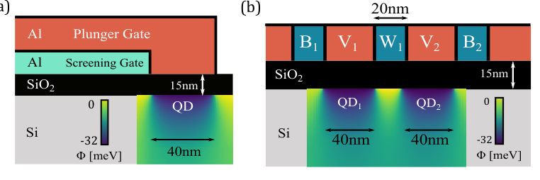
<figcaption class="paper-figure-caption"><b>Fig 1.</b> FIG. 1. Schematic of a double-QD device used for the one and two-qubit logic gate simulations: (a) side view, (b) front view. Electrons, accumulated at the Si/SiO2 interface, are laterally confined in QDs under the positive plunger gate voltages V1 and V2. The confining potential is further controlled by a grounded screening gate and the tunnel gate voltage W1. Barrier gates B1, B2 are kept at 0 V throughout the simulations. The electrostatic potential Φ(⃗r) shown here was calculated for V1 = V2 = 0.2 V, W1 = −0.1 V.</figcaption>
</figure>
<figure class="paper-figure-card">
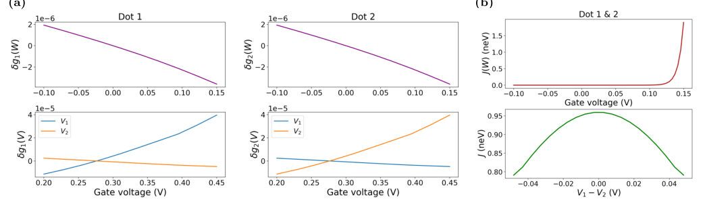
<figcaption class="paper-figure-caption"><b>Fig 2.</b> FIG. 2. Voltage dependence of effective spin Hamiltonian parameters in a double-QD device. (a) Gate-induced variations of the electron g-factors for dot 1 and dot 2 as functions of the plunger gate voltages V1 and V2, and the tunnel gate voltage W1. All quantities in panel (a) are shown relative to a reference (idling) voltage point (V1, V2, W1) = (0.2765 V, 0.2765 V, 0 V). (b) Exchange coupling J as a function of the tunnel gate voltage W1 and the inter-dot detuning V1 −V2. In panel (b), the exchange coupling is evaluated relative to a reference voltage point (V1, V2, W1) = (0.2765 V, 0.2765 V, 0.1 V), highlighting the exponential dependence of the inter-dot exchange on tunnel gate voltage.</figcaption>
</figure>
<figure class="paper-figure-card">
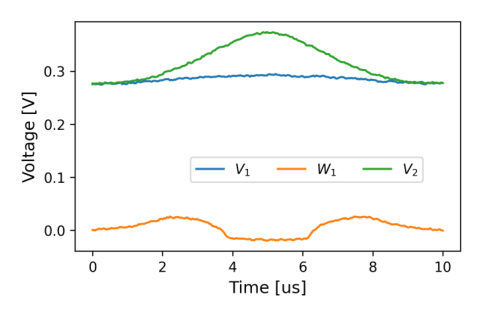
<figcaption class="paper-figure-caption"><b>Fig 3.</b> FIG. 3. Representative noisy voltage control pulse used to implement an RX(π/2) gate on qubit 1 in the two-qubit sim- ulation, while qubit 2 undergoes a simultaneous identity op- eration. The controls V1 and V2 denote plunger-gate voltages and W1 denotes the interdot barrier-gate voltage. The ideal waveform realizes the target gate operation, whereas the su- perimposed fluctuations correspond to sampled random tele- graph voltage noise. These noisy control voltages are mapped directly onto the time-dependent Hamiltonian through the voltage-dependent parameters gi(⃗V ) and Ji(⃗V ).</figcaption>
</figure>
<figure class="paper-figure-card">
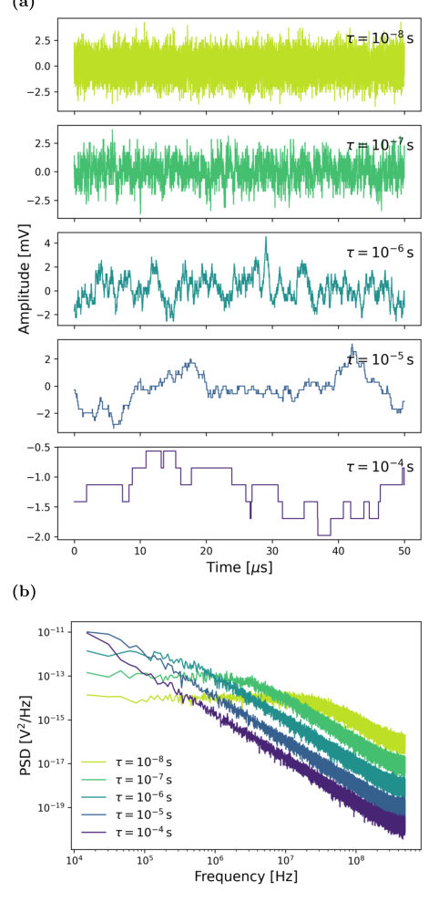
<figcaption class="paper-figure-caption"><b>Fig 4.</b> FIG. 4. (a) Simulated voltage-noise time series and (b) corresponding power spectral densities (PSDs) for five RTN switching times, τ ∈{10−8, 10−7, 10−6, 10−5, 10−4} s, at fixed RMS amplitude A = 1 mV. For each value of τ (with τ = ⟨τ0⟩= ⟨τ1⟩), the charge-noise signal on a given gate is constructed as a normalized sum of Nrtn = 50 independent RTN realizations [Eq. (4)]. The time series extend beyond the single-gate duration tg = 10 µs and span the timescale of a simulated variational single-shot experiment, texp = 130 µs; only the first 50 µs are shown for clarity.</figcaption>
</figure>
<figure class="paper-figure-card">
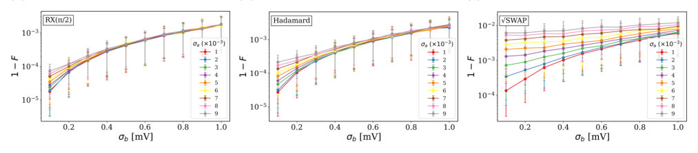
<figcaption class="paper-figure-caption"><b>Fig 5.</b> FIG. 5. Simulated gate infidelity under static voltage miscalibration for (a) RX(π/2) (tg = 10 µs), (b) Hadamard (tg = 10 µs), and (c) √</figcaption>
</figure>
</div>

<p><strong>Summary.</strong> This paper rigorously analyzes how gate-voltage noise impacts silicon spin qubits used in variational quantum eigensolvers. By developing a co-simulation framework, the authors quantify that two-qubit gates are highly susceptible to voltage noise, while also demonstrating that advanced error mitigation techniques can partially recover fidelity when noise dynamics are characterized by their switching time.</p>
<p><strong>Why it may be interesting.</strong> This work provides crucial, quantitative design rules for realizing scalable quantum hardware by directly linking device-level noise sources (voltage fluctuations) to algorithmic performance metrics (VQE accuracy).</p>
<details>
<summary>Detailed structure</summary>
<p><strong>Main problem.</strong> The study assesses how hardware imperfections, specifically gate-voltage noise (static miscalibration and dynamic charge noise), degrade the performance of Variational Quantum Eigensolvers (VQE) when applied to silicon spin qubits.</p>
<p><strong>Main result.</strong> Two-qubit gates are significantly more sensitive to voltage noise than single-qubit rotations due to the nonlinear dependence of exchange coupling on gate voltages. Furthermore, unitary error correction can partially mitigate noise effects if the noise switching time is short relative to the gate duration.</p>
<p><strong>Method.</strong> The authors developed a hardware-algorithm co-simulation framework combining 3D electrostatics for parameter extraction with quantum process tomography (QPT) and Lindblad master equation simulations to model noisy gate operations.</p>
<p><strong>Model / system.</strong> The system is silicon spin qubits in double quantum dots, whose dynamics are governed by an effective spin Hamiltonian derived from solving the Schrödinger equation using parameters ($\delta g$, $J$) extracted via Stark-shift models. Noise is modeled as Random Telegraph Noise (RTN) or systematic voltage scaling/offset errors.</p>
<p><strong>Key observables.</strong> Gate fidelities ($F$), reconstructed noise channels ($\chi_{	ext{err}}$), coherence angle ($\Theta$), and the achievable chemical accuracy for ground-state energy estimation in VQE.</p>
<p><strong>Important parameters / regimes.</strong> Noise amplitude ($A$), switching time ($    au$), gate duration ($t_g$), and voltage miscalibration parameters ($\sigma_a, \sigma_b$).</p>
<p><strong>Assumptions / limitations.</strong> The analysis relies on an effective-potential approximation for electrostatics and treats noise sources (like RTN) as independent or correlated stochastic processes.</p>
<p><strong>Figures summary.</strong> Figures illustrate the dependence of gate infidelity on miscalibration strength ($\sigma_a, \sigma_b$) and the crossover behavior of fidelity versus noise switching time ($    au/t_g$).</p>
<p><strong>Paper structure.</strong> The paper systematically develops from modeling the physical hardware (electrostatics $    o$ effective Hamiltonian) to implementing noise models (static vs. dynamic RTN), benchmarking key gates ($  ext{RX}, \sqrt{ ext{SWAP}},     ext{CZ}$), and finally applying these diagnostics within the VQE circuit context.</p>
</details>
<details>
<summary>Abstract</summary>
<p>Quantum computers offer a route to outperform classical methods in tasks such as molecular simulation, motivating hybrid algorithms like the Variational Quantum Eigensolver (VQE) for near-term devices. Silicon spin qubits are a promising platform for scalable quantum computation, but their performance is limited by hardware imperfections -- most notably charge-noise-induced potential fluctuations and static miscalibration of gate-electrode voltages -- which degrade quantum gate fidelities and, ultimately, algorithmic accuracy. Here we develop a hardware-algorithm co-simulation framework for silicon quantum-dot processors that links 3D electrostatics to effective $g$-factors and exchange couplings, and propagates voltage-level noise through realistic control pulses. Using VQE for $\mathrm{H}_2$ ground-state energy estimation as a circuit-level testbed, we study both static scaling/offset errors on the gate-electrode voltages and stochastic fluctuations modeled as random-telegraph noise with tunable amplitudes and switching times. At the gate level, we show that exchange-based two-qubit gates are roughly an order of magnitude more sensitive to these types of noise than ESR-driven single-qubit rotations. Quantum process tomography and Kraus-operator analysis further distinguish coherent and incoherent contributions and quantify the fraction of error that is, in principle, correctable by a compensating unitary. Embedding these noise models into the VQE circuit, we identify regimes of miscalibration strength and noise switching time compatible with chemically accurate energy estimates, and discuss how statistical post-processing based on the full distribution of noisy energy estimates could further improve accuracy.</p>
</details>
<p><sub><a href="#top">↑ back to top</a></sub></p>

<p><a id="paper-2606.08689"></a></p>
<h3 id="dynamical-cavity-method-for-continuous-time-complex-systems-on-sparse-random-graphs"><a href="http://arxiv.org/abs/2606.08689v1">Dynamical cavity method for continuous-time complex systems on sparse random graphs</a></h3>
<p><strong>Authors:</strong> Fernando L. Metz, Isaac Pérez Castillo<br>
<strong>Type:</strong> theory · <strong>Category:</strong> disordered systems and neural networks · <strong>PDF:</strong> <a href="https://arxiv.org/pdf/2606.08689v1">https://arxiv.org/pdf/2606.08689v1</a><br>
<strong>Analysis basis:</strong> full PDF text, analyzed in chunks
<strong>Topic relevance:</strong> <code>Keldysh / 2PI / non-Gaussian methods</code> <strong>3/5</strong> · <code>methods for driven-dissipative</code> <strong>3/5</strong> · <code>non-equilibrium dynamics</code> <strong>2/5</strong> · <code>correlated / nonlocal dissipation</code> <strong>1/5</strong> · <code>driven-dissipative phase transition</code> <strong>1/5</strong></p>
<div class="figure-strip-hint">↔ Scroll figures horizontally</div>
<div class="paper-figures-scroll">
<figure class="paper-figure-card">
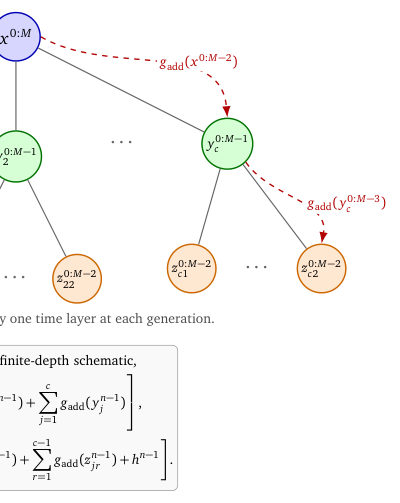
<figcaption class="paper-figure-caption"><b>Fig 1.</b> Figure 1: Finite-depth causal tree for the bidirected population-dynamics construc- tion. The root history is generated from neighbour histories one time layer shorter; each neighbour history is generated from its own descendants with one further time layer removed. The recursion terminates at leaves drawn from the initial distribu- tion. The schematic is drawn for the zero-noise, constant-coupling additive-input example used to make the causal structure explicit. In the general pairwise formu- lation, ordinary source histories are replaced by the corresponding imposed-history branch path laws.</figcaption>
</figure>
<figure class="paper-figure-card">
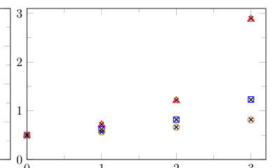
<figcaption class="paper-figure-caption"><b>Fig 2.</b> Figure 2: Comparison between direct finite-graph simulations and finite-depth pop- ulation dynamics for undirected random graphs with Poisson degree distribution of mean c. Coupling strengths are sampled from a Gaussian distribution with unit mean and unit variance. The time-discretization parameter is ∆= 0.1. Crosses denote direct finite-graph simulations of the discretized microscopic dynamics with N = 15000, while the remaining symbols denote the finite-depth population- dynamics construction with population size Npop = 105. The left panel shows the recurrent neural-network model and the right panel shows the Lotka–Volterra model with immigration rate λ = 10−2. Error bars are not shown.</figcaption>
</figure>
<figure class="paper-figure-card">
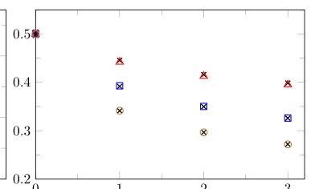
<figcaption class="paper-figure-caption"><b>Fig 3.</b> Figure 3: Comparison between direct finite-graph simulations and finite-depth popu- lation dynamics for undirected regular random graphs with fixed degree c. Coupling strengths are sampled from a Gaussian distribution with mean 〈J〉= −1 and unit variance. The time-discretization parameter is ∆= 0.1. Crosses denote direct finite- graph simulations of the discretized microscopic dynamics with N = 15000, while the remaining symbols denote the finite-depth population-dynamics construction with population size Npop = 105. The left panel shows the recurrent neural-network model and the right panel shows the Lotka–Volterra model with immigration rate λ = 10−2. Error bars are not shown.</figcaption>
</figure>
<figure class="paper-figure-card">
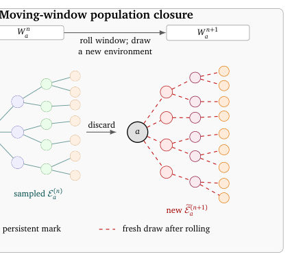
<figcaption class="paper-figure-caption"><b>Fig 4.</b> Figure 4: Graph-level view of the moving-window approximation. In the exact finite graph, the history window of a root i advances while the same rooted marked neigh- bourhood Ei is retained. In the moving-window population closure, the particle label a carries the shifted window, but the local marked environment used to generate the next endpoint is sampled anew. Thus the approximation is not in the one-step up- date, but in replacing the joint law of a window and its persistent rooted environment by a marginal window law together with an annealed environment draw.</figcaption>
</figure>
<figure class="paper-figure-card">
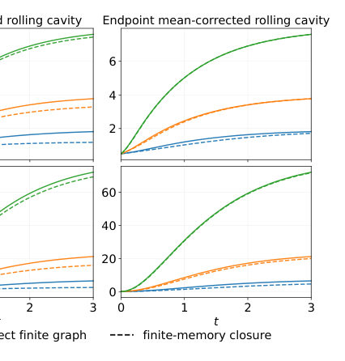
<figcaption class="paper-figure-caption"><b>Fig 5.</b> Figure 5: Comparison between direct finite-graph simulations and three finite- memory closures for the additive-input RNN on undirected Poisson graphs. The memory depth is fixed to L = 3. Columns show, from left to right, the rolling cavity, the root-quenched rolling cavity, and the endpoint mean-corrected rolling cavity. The top row shows the mean m(t), and the bottom row shows the second moment q(t). Solid curves are direct finite-graph simulations of Eq. (138); dashed curves are the corresponding finite-memory closure. Colours denote c = 2,4,8. The simulations use ∆= 10−2, M = 300, N = 15000, population size Npop = 105, initial condition x0 i = 0.5, symmetric reciprocal couplings Ji j =...</figcaption>
</figure>
</div>

<p><strong>Summary.</strong> This work extends Dynamical Mean-Field Theory (DMFT) to stochastic processes on sparse random graphs by developing a path-measure based cavity method. It rigorously distinguishes the mathematical requirements for closure based on graph reciprocity, showing that bidirected edges necessitate tracking complex conditional history kernels. The theory provides tools to analyze both finite-time and high-connectivity limits of such complex systems.</p>
<p><strong>Why it may be interesting.</strong> It provides a rigorous extension of DMFT to non-Gaussian, sparse network dynamics, which is crucial for modeling complex systems like recurrent neural networks or disordered physical materials where local interactions dominate.</p>
<details>
<summary>Detailed structure</summary>
<p><strong>Main problem.</strong> The paper develops a continuous-time cavity derivation for Dynamical Mean-Field Theory (DMFT) applied to stochastic dynamics on sparse, heterogeneous random graphs.</p>
<p><strong>Main result.</strong> It establishes that graph reciprocity dictates the closure structure of the path probability equations, requiring conditional kernels for bidirected edges, while providing systematic methods for high-connectivity limits.</p>
<p><strong>Method.</strong> The core method is developing cavity equations at the level of path measures, which are then translated into population dynamics representations for finite-time analysis.</p>
<p><strong>Model / system.</strong> The system models continuous degrees of freedom evolving via coupled stochastic differential equations (SDEs) on sparse random graphs. This framework generalizes standard DMFT to handle local field structures arising from sparsity and general pairwise interactions.</p>
<p><strong>Key observables.</strong> Path measures, path probabilities, message laws, barycenters, and higher-message moments are key observables used to characterize the system's dynamics.</p>
<p><strong>Important parameters / regimes.</strong> Graph structure (directed vs. reciprocal), connectivity regime (sparse vs. high-connectivity limit), and time scale ($t$ or finite depth $M$).</p>
<p><strong>Assumptions / limitations.</strong> The central approximation relies on factorizing the joint cavity marginal, which is exact only on trees but forms the basis for the thermodynamic limit on locally tree-like graphs.</p>
<p><strong>Figures summary.</strong> Not specified in the notes; however, the text refers to figures illustrating mean and variance tracking in simulations (e.g., Eq. 186).</p>
<p><strong>Paper structure.</strong> The paper progresses from defining the general path measure formulation on fixed graphs, deriving cavity equations via factorization approximations, analyzing the implications of graph reciprocity for closure structure, and finally projecting these results onto high-connectivity limits.</p>
</details>
<details>
<summary>Abstract</summary>
<p>Dynamical mean-field theory (DMFT) reduces dense high-dimensional disordered dynamics to a self-consistent effective stochastic process. For sparse and heterogeneous networks, however, local fields contain finitely many strong inputs, so the Gaussian closure mechanisms of dense DMFT need not apply. We develop a continuous-time cavity derivation of sparse-network DMFT at the level of path measures for stochastic dynamics with general pairwise interactions on sparse random graphs. The cavity equations are exact on trees and yield the finite-time thermodynamic description on locally tree-like graphs. They show explicitly how reciprocity changes dynamical closure: fully directed graphs recover the sparse directed path-probability equation, whereas reciprocal or bidirected edges require conditional path kernels driven by the imposed history of the receiving node. Ensemble averaging gives laws over path-probability messages, with barycenters and higher-message moments closing by multilinearity and independence of incoming branches. A causal discrete-time derivation yields the corresponding population-dynamics representation, distinguishing trajectory populations for directed graphs from conditional branch-law or finite-depth tree populations for reciprocal graphs. We also formulate finite-memory numerical closures and test them in an additive-input recurrent neural network specialization. Finally, high-connectivity limits are obtained as projections of the sparse path-measure theory, clarifying when dense drift, noise, and response channels reduce to standard low-dimensional DMFT and when path-level descriptions remain essential.</p>
</details>
<p><sub><a href="#top">↑ back to top</a></sub></p>

<p><a id="paper-2606.08334"></a></p>
<h3 id="enhanced-dumbbell-diffusion-in-a-periodic-potential-by-the-elevator-effect"><a href="http://arxiv.org/abs/2606.08334v1">Enhanced dumbbell diffusion in a periodic potential by the elevator effect</a></h3>
<p><strong>Authors:</strong> B. A. Kiang, H. Schiessel<br>
<strong>Type:</strong> theory · <strong>Category:</strong> statistical mechanics · <strong>PDF:</strong> <a href="https://arxiv.org/pdf/2606.08334v1">https://arxiv.org/pdf/2606.08334v1</a><br>
<strong>Analysis basis:</strong> full PDF text, analyzed in chunks
<strong>Topic relevance:</strong> <code>Frenkel-Kontorova</code> <strong>3/5</strong> · <code>non-equilibrium dynamics</code> <strong>2/5</strong> · <code>analog quantum simulation</code> <strong>1/5</strong> · <code>correlated / nonlocal dissipation</code> <strong>1/5</strong> · <code>driven-dissipative phase transition</code> <strong>1/5</strong> · <code>methods for driven-dissipative</code> <strong>1/5</strong> · <code>non-equilibrium universality</code> <strong>1/5</strong></p>
<div class="figure-strip-hint">↔ Scroll figures horizontally</div>
<div class="paper-figures-scroll">
<figure class="paper-figure-card">
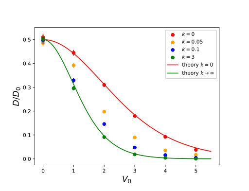
<figcaption class="paper-figure-caption"><b>Fig 1.</b> FIG. 1. Diffusion constant D as a function of barrier height 0 ≤V0 ≤5, for different values of spring constant k at spring equilibrium distance equal to the potential pe- riod, xeq = a = 16. The solid lines are theoretical limits: the red line corresponds to two independent beads (k = 0) and the green line to a rigid dumbbell (k →∞).</figcaption>
</figure>
<figure class="paper-figure-card">
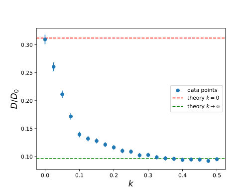
<figcaption class="paper-figure-caption"><b>Fig 2.</b> FIG. 2. Diffusion constant D as a function of spring constant k, for barrier height V0 = 2 and equilibrium length xeq = 16. The horizontal dashed lines indicate the asymptotic cases k = 0 and k →∞.</figcaption>
</figure>
<figure class="paper-figure-card">
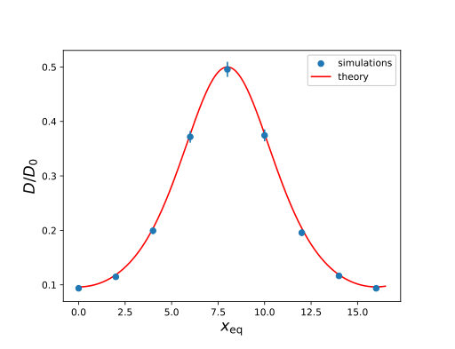
<figcaption class="paper-figure-caption"><b>Fig 3.</b> FIG. 4. Simulation results for D as a function of the spring equilibrium length xeq for a strong spring k = 2, compared to Eq. 10, the theoretical expectation for a rigid dumbbell (solid line).</figcaption>
</figure>
<figure class="paper-figure-card">
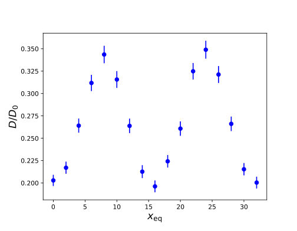
<figcaption class="paper-figure-caption"><b>Fig 4.</b> FIG. 3. Diffusion constant D as a function of equilibrium length 0 ≤xeq ≤32, for V0 = 2 and k = 0.05.</figcaption>
</figure>
<figure class="paper-figure-card">
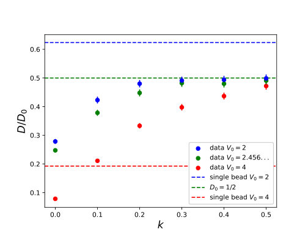
<figcaption class="paper-figure-caption"><b>Fig 5.</b> FIG. 5. Diffusion constant of a dumbbell with xeq = a/2 in potentials with V0 = 2 (blue), V0 = 2.456... (green) and V0 = 4 (red), as a function of the spring constant k. Dashed lines indicate diffusion constants of single particle in the same potentials. Note that for V0 = 2.456... (green) the single bead diffusion constant equals 1/2, the same value as for this dumbbell in the rigid spring limit, independent of V0.</figcaption>
</figure>
</div>

<p><strong>Summary.</strong> This work analyzes the diffusion of a dumbbell particle system moving through a periodic potential. By simulating and theoretically modeling the interaction between two connected beads, the authors demonstrate an 'elevator effect' that can boost diffusivity beyond single-particle limits. The findings provide quantitative insights into how internal coupling dictates transport properties in structured environments.</p>
<p><strong>Why it may be interesting.</strong> While focused on classical statistical mechanics, the concept of enhanced transport via coupled degrees of freedom (the 'elevator effect') is analogous to mechanisms studied in quantum tunneling or correlated electron dynamics where coupling modifies effective potentials.</p>
<details>
<summary>Detailed structure</summary>
<p><strong>Main problem.</strong> The study investigates how coupling two particles (a dumbbell) via a spring affects their diffusion rate when moving through a one-dimensional periodic potential.</p>
<p><strong>Main result.</strong> The system exhibits an 'elevator effect,' where the diffusion constant can exceed that of a single bead, particularly when the equilibrium separation is incommensurate with the potential periodicity.</p>
<p><strong>Method.</strong> Molecular Dynamics (MD) simulations are used to model the random walk, and these results are rigorously compared against derived theoretical analytical equations for various limiting cases.</p>
<p><strong>Model / system.</strong> The system models a dumbbell—two beads connected by an ideal spring—moving in a 1D periodic potential $V(x)$. The dynamics are governed by a Hamiltonian incorporating external potentials and the internal spring energy, solved via Langevin equations.</p>
<p><strong>Key observables.</strong> Diffusion constant ratio ($D/D_0$ or $D/D_s$), force distributions ($\Delta f$, $\Sigma f$).</p>
<p><strong>Important parameters / regimes.</strong> Spring constant ($k$), equilibrium distance ($x_{eq}$), potential barrier height ($V_0$), and potential periodicity ($a$).</p>
<p><strong>Assumptions / limitations.</strong> The analysis is primarily restricted to one-dimensional periodic potentials for observing the clear elevator effect.</p>
<p><strong>Figures summary.</strong> Figures compare theoretical predictions (e.g., Eq. 10) against MD simulations, showing agreement; contour plots map $D/D_s$ dependence on $k$ and $V_0$; force histograms illustrate force compensation mechanisms.</p>
<p><strong>Paper structure.</strong> The paper establishes the Hamiltonian and equations of motion, analyzes limiting cases ($k 	o 0$, $k 	o \infty$), derives theoretical expressions for the diffusion constant based on potential energy minimization, and validates these theories using extensive MD simulations across parameter space.</p>
</details>
<details>
<summary>Abstract</summary>
<p>We present molecular dynamics simulations of the random walk of a dumbbell - two beads connected by a spring - in a one-dimensional periodic potential and compare our results in limiting cases to theoretical analytical equations. The relevant parameters in this system are the spring constant, the equilibrium distance of the spring (relative to the periodicity of the potential), and the amplitude of the potential. Dumbbells with equilibrium distances incommensurate with the potential periodicity and with a sufficiently large spring constant exhibit enhanced diffusion. The diffusion constant can exceed that of a single bead in the same potential landscape. In this case, the dumbbell resembles a traction elevator, with the two connected beads acting as the elevator car and counterweight: the ''elevator effect''.</p>
</details>
<p><sub><a href="#top">↑ back to top</a></sub></p>

<p><a id="paper-2606.08801"></a></p>
<h3 id="fluctuation-stable-generalized-entropy-probes-of-spectral-heterogeneity"><a href="http://arxiv.org/abs/2606.08801v1">Fluctuation-stable generalized entropy probes of spectral heterogeneity</a></h3>
<p><strong>Authors:</strong> Arpita Goswami<br>
<strong>Type:</strong> theory · <strong>Category:</strong> statistical mechanics · <strong>PDF:</strong> <a href="https://arxiv.org/pdf/2606.08801v1">https://arxiv.org/pdf/2606.08801v1</a><br>
<strong>Analysis basis:</strong> full PDF text, analyzed in chunks
<strong>Topic relevance:</strong> <code>entanglement &amp; information structure</code> <strong>3/5</strong> · <code>driven-dissipative phase transition</code> <strong>2/5</strong> · <code>non-equilibrium universality</code> <strong>2/5</strong> · <code>Frenkel-Kontorova</code> <strong>1/5</strong> · <code>methods for driven-dissipative</code> <strong>1/5</strong> · <code>non-equilibrium dynamics</code> <strong>1/5</strong></p>
<div class="figure-strip-hint">↔ Scroll figures horizontally</div>
<div class="paper-figures-scroll">
<figure class="paper-figure-card">
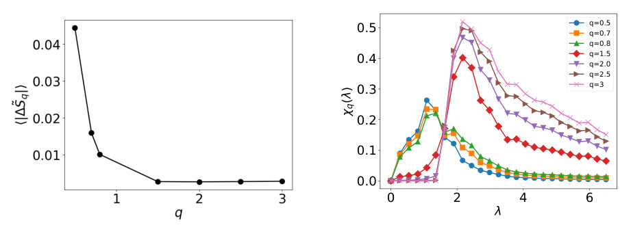
<figcaption class="paper-figure-caption"><b>Fig 1.</b> Figure 1: (a) Average deviation of the normalized Tsallis entropy under small perturbations of the wavefunction amplitudes as a function of the entropic index q. The enhanced sensitivity for q &lt; 1 reflects the increased contribution of low-probability components, while the stable behavior for q &gt; 1 demonstrates the robustness of the entropy-based diagnostic. b) Entropy-gradient susceptibility χq(λ) of the GAA model as a function of the quasiperiodic potential strength λ for q = 0.5, 0.7, 0.8, 1.5, 2, 2.5, 3. Both the calculations are performed for L = 600.</figcaption>
</figure>
<figure class="paper-figure-card">
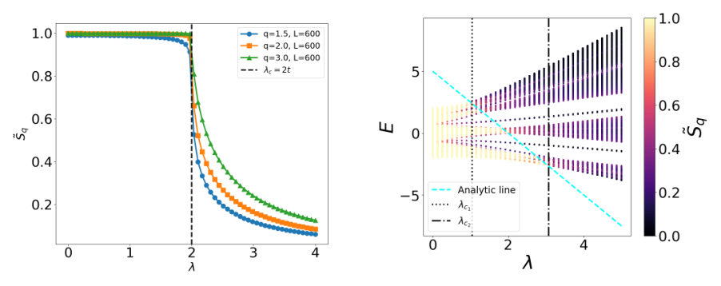
<figcaption class="paper-figure-caption"><b>Fig 2.</b> Figure 2: (a) Normalized Tsallis entropy ˜S q as a function of quasiperiodic potential strength λ for the Aubry-André (AA) model at different entropic orders q, with system size L = 600. (b) Normalized Tsallis entropy ˜S q of the GAA model as a function of quasiperiodic potential strength λ at q = 1.5 and L = 600. The entropy behavior shows the presence of MEs.</figcaption>
</figure>
<figure class="paper-figure-card">
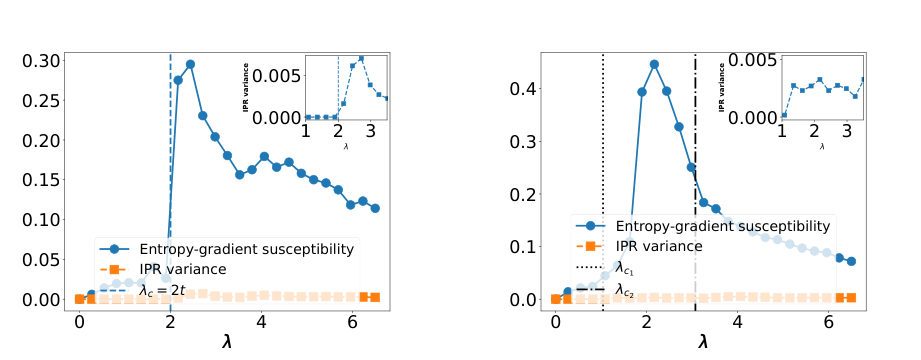
<figcaption class="paper-figure-caption"><b>Fig 3.</b> Figure 3: (a) Entropy-gradient susceptibility χq(λ) of the AA model as a function of λ. The absence of a pronounced peak reflects the lack of energy-resolved localization, consistent with a global localization transition. (b) Entropy-gradient susceptibility χq(λ) of the GAA model as a function of λ. A pronounced and systematically sharpening peak emerges at intermediate quasiperiodic strength, signaling enhanced spectral heterogeneity due to the coexistence of localized and extended eigenstates. Inset: IPR variance vs. λ.</figcaption>
</figure>
</div>

<p><strong>Summary.</strong> The paper introduces fluctuation stability as a guiding principle for using generalized entropy measures ($S_q$) to study spectral properties. By analyzing how these entropies respond to weak perturbations, the authors establish that $q>1$ yields robust diagnostics. This framework successfully distinguishes between simple localization transitions and complex mobility-edge physics in quasiperiodic models.</p>
<p><strong>Why it may be interesting.</strong> This work provides a powerful, quantitative diagnostic tool ($\chi_q$) rooted in information theory that can be applied to complex many-body systems exhibiting quasiperiodicity or disorder, linking entropy scaling directly to fundamental physical phenomena like mobility edges.</p>
<details>
<summary>Detailed structure</summary>
<p><strong>Main problem.</strong> To develop a fluctuation-stability framework using generalized entropy measures to robustly characterize spectral heterogeneity and localization in quasiperiodic quantum systems.</p>
<p><strong>Main result.</strong> The choice of entropic index $q>1$ provides a theoretically stable diagnostic tool that suppresses noise from weak spectral fluctuations, allowing the susceptibility $\chi_q$ to sharply distinguish between homogeneous transitions and mobility-edge coexistence regimes.</p>
<p><strong>Method.</strong> The authors employ generalized entropy measures (Tsallis entropy $S_q$) and analyze its energy derivative, the entropy-gradient susceptibility ($\chi_q$), under perturbative and thermodynamic scaling analyses.</p>
<p><strong>Model / system.</strong> The study focuses on quasiperiodic lattices using canonical models like the Aubry-André (AA) model for homogeneous transitions and the generalized Aubry-André (GAA) model, which hosts mobility edges.</p>
<p><strong>Key observables.</strong> Entropy-gradient susceptibility ($\chi_q$), normalized Tsallis entropy ($   ilde{S}_q$), and fluctuation deviation $\langle|\Delta	ilde{S}_q|
angle$.</p>
<p><strong>Important parameters / regimes.</strong> The entropic index $q$ (with critical regimes at $q=1$ and $q=3/2$), the quasiperiodic potential strength ($\lambda$), and system size ($L$).</p>
<p><strong>Assumptions / limitations.</strong> The analysis relies on approximating the coarse-grained entropy profile in the coexistence regime, and the stability argument hinges on analyzing fluctuations under weak perturbations.</p>
<p><strong>Figures summary.</strong> Figures compare $\chi_q$ profiles for AA (smooth crossover) versus GAA (sharp peaks), demonstrating that $q>1$ yields stable signatures distinguishing mobility edges from simple localization transitions.</p>
<p><strong>Paper structure.</strong> The paper first establishes the need for fluctuation stability in generalized entropy diagnostics, then derives theoretical bounds showing how $q>1$ suppresses noise. Finally, it applies this framework to AA and GAA models using $\chi_q$ to differentiate between different types of spectral phase transitions.</p>
</details>
<details>
<summary>Abstract</summary>
<p>Generalized entropy measures are widely used to characterize localization and multifractality, and the regime \(q>1\) is often empirically found to exhibit improved numerical stability and cleaner scaling behavior. Here, we develop a fluctuation-stability framework for generalized entropy diagnostics and show that weak-amplitude spectral fluctuations are amplified for \(q<1\) and suppressed for \(q>1\), thereby providing a theoretical basis for the physically robust \(q>1\) regime. A thermodynamic scaling analysis further identifies an asymptotically stable regime beyond a critical threshold. As an application, we introduce the entropy-gradient susceptibility \(χ_q\) as a coarse-grained probe of spectral heterogeneity. Using the Aubry-André and generalized Aubry-André models, we demonstrate that \(χ_q\) sharply distinguishes homogeneous localization transitions from mobility-edge coexistence regimes. Our results establish fluctuation stability as a guiding principle for generalized entropy diagnostics in quasiperiodic systems.</p>
</details>
<p><sub><a href="#top">↑ back to top</a></sub></p>

<p><a id="paper-2606.08019"></a></p>
<h3 id="non-magnetic-ground-state-in-amath634mathwclmath635math-a-cs-rb-k-a-face-centered-cubic-system-of-spin-orbit-entangled-math636math-2-states"><a href="http://arxiv.org/abs/2606.08019v1">Non-magnetic ground state in A$_2$WCl$_6$ (A = Cs, Rb, K): A face-centered cubic system of spin-orbit-entangled $J$ = 2 states</a></h3>
<p><strong>Authors:</strong> T. Takayama, K. Ishii, S. Bette, J. Nuss, Y. Matsumoto, K. Fürsich, M. Minola, D. P. Sari, I. Watanabe, A. Krajewska, R. Dinnebier, B. Keimer, H. Takagi<br>
<strong>Type:</strong> experiment · <strong>Category:</strong> strongly correlated electrons · <strong>PDF:</strong> <a href="https://arxiv.org/pdf/2606.08019v1">https://arxiv.org/pdf/2606.08019v1</a><br>
<strong>Analysis basis:</strong> full PDF text, analyzed in chunks
<strong>Topic relevance:</strong> <code>analog quantum simulation</code> <strong>3/5</strong> · <code>exotic spin models in light-matter</code> <strong>3/5</strong> · <code>Kondo &amp; dissipative impurity</code> <strong>1/5</strong> · <code>correlated cavity matter</code> <strong>1/5</strong> · <code>entanglement &amp; information structure</code> <strong>1/5</strong> · <code>spintronics-quantum-optics interface</code> <strong>1/5</strong></p>
<div class="figure-strip-hint">↔ Scroll figures horizontally</div>
<div class="paper-figures-scroll">
<figure class="paper-figure-card">
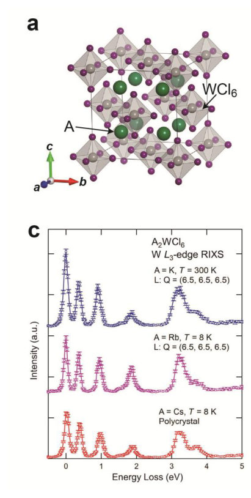
<figcaption class="paper-figure-caption"><b>Fig 1.</b> Fig. 1 a. Crystal structure of A2WCl6 (A = Cs, Rb, and K) forming a cubic lattice with the space</figcaption>
</figure>
<figure class="paper-figure-card">
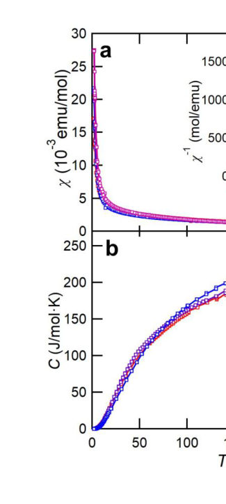
<figcaption class="paper-figure-caption"><b>Fig 2.</b> Fig. 2 Temperature dependence of a. magnetic susceptibility (T) and b. specific heat C(T) of the</figcaption>
</figure>
<figure class="paper-figure-card">
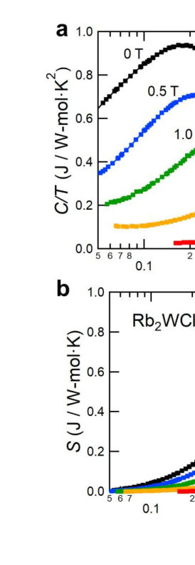
<figcaption class="paper-figure-caption"><b>Fig 3.</b> Fig. 3. a. Specific heat divided by temperature, C(T)/T, of Rb2WCl6 single crystals at low</figcaption>
</figure>
<figure class="paper-figure-card">
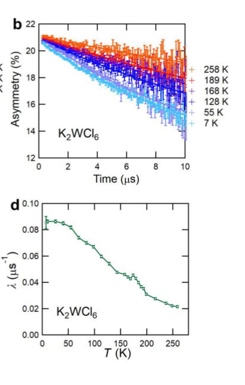
<figcaption class="paper-figure-caption"><b>Fig 4.</b> Fig. 4. a,b. Temperature dependence of SR time spectrum measured on the powder of Rb2WCl6</figcaption>
</figure>
<figure class="paper-figure-card">
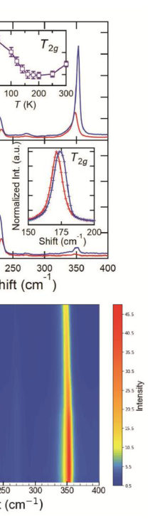
<figcaption class="paper-figure-caption"><b>Fig 5.</b> Fig. 5. Raman scattering measurement on a Rb2WCl6 single crystal. a. Raman scattering spectra</figcaption>
</figure>
</div>

<p><strong>Summary.</strong> The authors investigate $  ext{A}_2    ext{WCl}_6$ compounds whose electronic properties are governed by a $J=2$ spin-orbit-entangled state. By comparing $  ext{K}$, $  ext{Rb}$, and $ ext{Cs}$ analogues, they show that structural transitions can stabilize a non-magnetic singlet ground state in one case, while others exhibit evidence of local quadrupolar distortions without long-range order.</p>
<p><strong>Why it may be interesting.</strong> This work provides a detailed case study of how crystal field effects and spin-orbit coupling dictate the emergent quantum ground state in transition metal oxides/halides, touching upon concepts relevant to frustrated magnetism and exotic ordering.</p>
<details>
<summary>Detailed structure</summary>
<p><strong>Main problem.</strong> The study investigates the electronic, magnetic, and structural properties of $   ext{A}_2    ext{WCl}_6$ to understand multipolar ordering arising from strong spin-orbit coupling in $5d^2$ systems.</p>
<p><strong>Main result.</strong> $  ext{K}_2    ext{WCl}_6$ undergoes a structural transition leading to a non-magnetic singlet ground state, while $   ext{Rb}_2   ext{WCl}_6$ and $   ext{Cs}_2   ext{WCl}_6$ remain non-magnetic down to low temperatures, suggesting local quadrupolar distortions.</p>
<p><strong>Method.</strong> The research employs a combination of advanced experimental techniques including Resonant Inelastic X-ray Scattering (RIXS), muon spin relaxation ($\mu	ext{SR}$), Raman spectroscopy, and structural characterization (XRD).</p>
<p><strong>Model / system.</strong> The system is the anti-fluorite tungsten chloride $ ext{A}_2    ext{WCl}_6$ ($  ext{A} =    ext{Cs},    ext{Rb},    ext{K}$), where the $   ext{W}^{4+}$ ion ($5d^2$) forms a spin-orbit-entangled $J=2$ state, which is theoretically prone to multipolar ordering.</p>
<p><strong>Key observables.</strong> Electronic excitations (RIXS peaks at 0.4, 1.0, 1.9, and 3.2 eV), structural transitions (cubic-to-tetragonal in $ ext{K}_2    ext{WCl}_6$), magnetic susceptibility ($\chi(T)$), and local distortions observed via phonon broadening.</p>
<p><strong>Important parameters / regimes.</strong> The strong spin-orbit coupling leads to a $J=2$ ground state, and the analysis focuses on how structural changes lift degeneracies or induce quadrupolar interactions.</p>
<p><strong>Assumptions / limitations.</strong> It is assumed that the subtle low-temperature structural anomalies are driven by the local quadrupolar component of the $J=2$ state, but chemical disorder prevents long-range ordering.</p>
<p><strong>Figures summary.</strong> Figures illustrate $   ext{WCl}_6$ octahedra in anti-fluorite arrangement; RIXS spectra show resolved electronic excitations; and structural data confirm a phase transition for $ ext{K}_2    ext{WCl}_6$.</p>
<p><strong>Paper structure.</strong> The paper systematically analyzes the electronic structure using theoretical models (LS/jj coupling) alongside comprehensive experimental probes ($    ext{RIXS}$, $\mu	ext{SR}$, Raman, XRD) to correlate structural changes with the magnetic and electronic ground state.</p>
</details>
<details>
<summary>Abstract</summary>
<p>Heavy transition metal compounds with strong spin-orbit coupling appeared as a platform for $d$-electron multipolar physics. We report the electronic, magnetic, and structural properties of antifluorite-type tungsten chloride A$_2$WCl$_6$ (A = Cs, Rb, and K), comprising a face-centered cubic lattice of W$^{4+}$ ions. The 5$d^2$ configuration of W$^{4+}$ ions in a cubic environment yields a spin-orbit-entangled $J$ = 2 state, which has been discussed to give rise to multipolar ordering such as charge quadrupolar or magnetic octupolar ordering. We found that K$_2$WCl$_6$ undergoes a cubic-to-tetragonal structural transition which lifts the degeneracy of the $J$ = 2 state, leading to a non-magnetic singlet ground state. By contrast, Rb$_2$WCl$_6$ and Cs$_2$WCl$_6$ show no signs of phase transition and remain non-magnetic down to the lowest temperature measured. At low temperatures, signatures of weak structural anomalies were revealed, which may point to the presence of local distortions of the WCl$_6$ octahedra. We argue that the subtle structural distortion arises from the local quadrupolar component of the $J$ = 2 state but the frustrated quadrupolar interaction, together with chemical disorder, inhibits the formation of long-range quadrupolar ordering.</p>
</details>
<p><sub><a href="#top">↑ back to top</a></sub></p>

<p><a id="paper-2606.09494"></a></p>
<h3 id="percolation-and-clustering-in-ecological-communities-a-dynamical-theory"><a href="http://arxiv.org/abs/2606.09494v1">Percolation and clustering in ecological communities: A dynamical theory</a></h3>
<p><strong>Authors:</strong> Dario Sergo, Cédric Koller, Vittorio Erba, Lenka Zdeborová<br>
<strong>Type:</strong> theory · <strong>Category:</strong> disordered systems and neural networks · <strong>PDF:</strong> <a href="https://arxiv.org/pdf/2606.09494v1">https://arxiv.org/pdf/2606.09494v1</a><br>
<strong>Analysis basis:</strong> full PDF text, analyzed in chunks
<strong>Topic relevance:</strong> <code>methods for driven-dissipative</code> <strong>3/5</strong> · <code>non-equilibrium dynamics</code> <strong>2/5</strong> · <code>non-equilibrium universality</code> <strong>2/5</strong> · <code>Keldysh / 2PI / non-Gaussian methods</code> <strong>1/5</strong> · <code>correlated / nonlocal dissipation</code> <strong>1/5</strong> · <code>driven-dissipative phase transition</code> <strong>1/5</strong></p>
<div class="figure-strip-hint">↔ Scroll figures horizontally</div>
<div class="paper-figures-scroll">
<figure class="paper-figure-card">

<figcaption class="paper-figure-caption"><b>Fig 1.</b> Figure 1. Spatial phase diagram of the discrete gLV model, on a d-regular graph with uniform competitive interactions. Critical values of α at which some biomasses become zero for some sites (αext), at which the percolation transition occurs (αperc), and at which the clusters of occupied sites become linear (αlin). A graphical representation of the different phases is also provided. This phase diagram is produced for the simplest instructive case with carrying capacity K = 2 (the phenomenology remains qualitatively the same at higher K, see Appendix A and the Table I in Appendix F). The critical extinction threshold in the fully connected limit (d = ∞) is also shown, demonstrating that the...</figcaption>
</figure>
<figure class="paper-figure-card">

<figcaption class="paper-figure-caption"><b>Fig 2.</b> Figure 2. BDCM accurately captures typical dynamics and structure, illustrated for K = 2 on d = 3–random regular graphs. (Top) Extinction fraction ρ0 and largest cluster fraction ϕLC as a function of α, computed from BDCM on the dominant (p/c)–attractors (p = 3, c = 2). Black dots denote numerical simulations (S = 104, averaging 5 simulations, error bars are negligible), lines represent theoretical predictions, showing perfect agreement. Colored markers indicate the extinction (square) and percolation (cross) phase transitions (same notation as in Figure 1). The table reports the normalized entropy Φ/ log(K) as a function of p (for c = 2), showing rapid convergence to the maximal value....</figcaption>
</figure>
<figure class="paper-figure-card">

<figcaption class="paper-figure-caption"><b>Fig 3.</b> Figure 3. Full occupied entropy and atypical full-survival threshold. (Left) The entropy ΦFull.Occupied (p/c) , which counts the log-number of atypical initial conditions leading to a fully occupied attractor, for multiple values of K, d, and p. For K = 2, d = 3, the entropies coincide for all p. For visual clarity all the negative entropies correspond to the marker &lt; 0. (Right) Threshold values αatyp and αext for finite d and in the limit d →∞. We refer to Figure 11 in Appendix F 2 for the entropies in the limit d →∞, where we also report the critical threshold.</figcaption>
</figure>
<figure class="paper-figure-card">

<figcaption class="paper-figure-caption"><b>Fig 4.</b> Figure 4. Simulation of discrete gLV model on a grid, at convergence. (First two rows) Coupling of neighboring sites sampled from a truncated Gaussian, with standard deviation σ and mean µ. The white spots indicate extinct sites (at convergence), dark green occupied sites. The fragmentation of the community is visible in the first row. (Third row) Uniform coupling case, where the emergence of ring-like structures can be observed. Both simulations are done for K = 15.</figcaption>
</figure>
<figure class="paper-figure-card">

<figcaption class="paper-figure-caption"><b>Fig 5.</b> Figure 5. Empirical comparison of discrete generalized Lotka-Volterra with its continuous counterpart, uni- form interactions. Simulations on a random 3−regular graph with S = 105 show that discrete gLV closely reproduces the behavior of continuous gLV. (Top row) For small α both models reach a uniform state, whereas for larger α extinction and heterogeneous biomass levels emerge. This is consistent with what is reported in the usual literature of continuous gLV model, on random regular graphs (see for instance [26, 27, 32]). The histograms of the normalized biomass at convergence, shown alongside the trajectories, are nearly identical in the two models, indicating that not only the mean...</figcaption>
</figure>
</div>

<p><strong>Summary.</strong> This paper introduces a rigorous dynamical theory to study how competition in ecological networks leads to large-scale clustering and percolation. By adapting advanced statistical physics tools like the backtracking cavity method, the authors analytically determine critical thresholds that govern whether an ecosystem remains fully occupied, forms connected clusters, or fragments entirely.</p>
<p><strong>Why it may be interesting.</strong> The methodology—using cavity methods and entropy maximization to analyze collective behavior on structured graphs—is highly transferable. The techniques developed for handling dynamical correlations are valuable for analyzing complex, interacting systems where local rules dictate global structure, relevant to disordered quantum spin models or neural network dynamics.</p>
<details>
<summary>Detailed structure</summary>
<p><strong>Main problem.</strong> The paper develops a dynamical theory to analytically understand percolation and clustering phenomena in ecological communities with structured interactions.</p>
<p><strong>Main result.</strong> It characterizes three distinct regimes—fully occupied, percolating, and non-percolating—and provides an analytical framework for how local competition rules generate large-scale spatial organization.</p>
<p><strong>Method.</strong> The analysis employs the backtracking dynamical cavity method (BDCM) combined with message-passing techniques from statistical physics to handle correlated site occupations.</p>
<p><strong>Model / system.</strong> The system models competitive ecological dynamics using a discrete version of the generalized Lotka–Volterra (gLV) model on random interaction graphs. The state evolution is governed by synchronous updates, and extinction ($N_i=0$) is an absorbing state.</p>
<p><strong>Key observables.</strong> Percolation transition ($\alpha_{perc}$), clustering structure function ($\eta_l$), fraction of sites in the largest connected component ($\phi_{LC}$), and entropy density ($\Phi$).</p>
<p><strong>Important parameters / regimes.</strong> Interaction strength ($\alpha$), graph degree ($d$), model parameter ($K$), and time/site size limits ($S 	o \infty$, $d 	o \infty$).</p>
<p><strong>Assumptions / limitations.</strong> The analysis relies on synchronous updates, the use of message-passing approximations (like Belief Propagation), and assuming local tree-like structures for tractability.</p>
<p><strong>Figures summary.</strong> Figures illustrate phase diagrams showing critical thresholds ($\alpha_{ext}, \alpha_{perc}$); comparisons between theoretical predictions and numerical simulations for $
ho_0$ and $\phi_{LC}$; and entropy calculations determining the stability of attractors (cycles vs. fixed points).</p>
<p><strong>Paper structure.</strong> The paper progresses from defining the discrete gLV model to applying advanced statistical physics tools like BDCM and message passing. It systematically calculates key observables ($
ho_0, \phi_{LC}, \eta_l$) across different parameter regimes ($\alpha$ vs $d$), culminating in the determination of sharp phase transition thresholds.</p>
</details>
<details>
<summary>Abstract</summary>
<p>Ecological communities with structured interactions exhibit collective phenomena such as percolation and clustering of occupied sites. While these effects have been documented in experiments and simulations, systematic analytical understanding has remained limited. In this paper, we develop a dynamical theory of these phenomena for competitive ecological systems defined on random interaction graphs. We introduce a discrete version of the generalized Lotka-Volterra model that preserves key macroscopic features of continuous ecological dynamics while enabling analytical treatment. Within this framework, we characterize the emergence of percolating clusters and describe the spatial organization of surviving sites. Our analysis uncovers which equilibria can be reached by the dynamics and shows how this dynamical accessibility governs the onset of clustering and percolation. In doing so, our framework complements classical Lotka-Volterra theory by providing a dynamical perspective on the collective organization of structured communities.</p>
</details>
<p><sub><a href="#top">↑ back to top</a></sub></p>

<p><a id="paper-2606.09628"></a></p>
<h3 id="uniaxial-stress-induced-magnetic-transitions-in-the-triangular-lattice-antiferromagnet-pdcro2"><a href="http://arxiv.org/abs/2606.09628v1">Uniaxial-Stress-Induced Magnetic Transitions in the Triangular-Lattice Antiferromagnet PdCrO2</a></h3>
<p><strong>Authors:</strong> Nina Stilkerich, Tobias Ritschel, Hilary M. L. Noad, Richard Waite, Dmitry Khalyavin, Kousuke Ishida, Pascal Manuel, Fabio Orlandi, Seunghyun Khim, Elena Gati, Andrew P. Mackenzie, Jochen Geck, Clifford W. Hicks<br>
<strong>Type:</strong> both · <strong>Category:</strong> strongly correlated electrons · <strong>PDF:</strong> <a href="https://arxiv.org/pdf/2606.09628v1">https://arxiv.org/pdf/2606.09628v1</a><br>
<strong>Analysis basis:</strong> full PDF text, analyzed in chunks
<strong>Topic relevance:</strong> <code>analog quantum simulation</code> <strong>3/5</strong> · <code>exotic spin models in light-matter</code> <strong>3/5</strong> · <code>spintronics-quantum-optics interface</code> <strong>3/5</strong> · <code>Frenkel-Kontorova</code> <strong>1/5</strong></p>
<div class="figure-strip-hint">↔ Scroll figures horizontally</div>
<div class="paper-figures-scroll">
<figure class="paper-figure-card">

<figcaption class="paper-figure-caption"><b>Fig 1.</b> Figure 1. Lattice directions and hypothesised spin configura- tions under strain. (a) Schematic of a triangular lattice under uniaxial stress applied along the [210] lattice direction. J1 is the exchange energy across the bonds that get compressed (solid lines), and J2 across those that get stretched (dashed lines). The blue lines are high-symmetry lattice directions. The x, y, and z directions, used in discussion of strain, are also shown. (b) 120◦spin spiral, obtained when J2 = J1. The coloured lines are magnetic Bragg planes. (c) 150◦spin spiral, obtained for J2 = 0.5774J1 (neglecting all longer-range interactions). (d) N´eel order. (e) Motion of the magnetic reflections as the mag-...</figcaption>
</figure>
<figure class="paper-figure-card">

<figcaption class="paper-figure-caption"><b>Fig 2.</b> Figure 2. Experimental information on XRD measurement under strain. (a) Setup for the X-ray diffraction measurement with detector angle ζ, cryostat rotation ω, sample rotation φ, and sample tilt χ labelled. (b) Unit cell of PdCrO2; this cell is of the obverse type. (c) A parametrisation of this cell. (d) Sum of area detector images over varying ω, focused on the 2¯2¯5 reflection. (e) Azimuthally integrated intensity of the 2¯2¯5 reflection (black line), along with a fit (blue dashed line).</figcaption>
</figure>
<figure class="paper-figure-card">

<figcaption class="paper-figure-caption"><b>Fig 3.</b> Figure 5. Differential Young’s modulus and Poisson ratio. (a) Differential Young’s modulus E of sample B at 15 K, and differential Poisson ratio ν of sample A at 14 K. (b) Equivalent data at 45 K.</figcaption>
</figure>
<figure class="paper-figure-card">

<figcaption class="paper-figure-caption"><b>Fig 4.</b> Figure 4. Stress-strain relationship and differential Young’s modulus. (a) Stress σxx versus strain εxx for sample B at various temperatures. (b) Differential Young’s modulus E = dσxx/dεxx for sample B at 5.0 K, with the strain ranges of the three different phases labelled. (c) Differential Young’s modulus of sample B at various temperatures. (d) Same for sample C. In all the panels, the calibration strain, −0.69 · 10−2, obtained from XRD data is shown by a vertical dashed line.</figcaption>
</figure>
<figure class="paper-figure-card">

<figcaption class="paper-figure-caption"><b>Fig 5.</b> Figure 6. Phase diagram. (a) Stress-temperature phase diagram of PdCrO2, derived from stress-strain data on sample B. (b) Jump in strain ∆ε at the two first-order transitions, as determined from stress-strain data on sample B. Due to artefacts introduced by the two-spring approximation, these values for ∆ε are about 70% of the true strain jumps at the transitions.</figcaption>
</figure>
</div>

<p><strong>Summary.</strong> This work experimentally and theoretically investigates how uniaxial stress controls magnetic transitions in the triangular-lattice antiferromagnet PdCrO2. By combining XRD, mechanical testing, and neutron scattering, the authors reveal a first-order transition where the lattice stiffens dramatically, suggesting the magnetic order becomes rigid due to coupling with the Fermi surface. This highlights strong magnetoelastic coupling as a tunable mechanism for controlling quantum states in correlated materials.</p>
<p><strong>Why it may be interesting.</strong> The strong, measurable coupling between mechanical strain and electronic/magnetic state is central to understanding emergent quantum phenomena in correlated materials. The concept of 'locking' due to Fermi surface nesting provides a concrete mechanism for such magnetoelastic rigidity.</p>
<details>
<summary>Detailed structure</summary>
<p><strong>Main problem.</strong> To investigate how applying uniaxial stress can tune magnetic frustration and induce first-order magnetic transitions in the triangular-lattice antiferromagnet PdCrO2.</p>
<p><strong>Main result.</strong> The application of stress induces a new, first-order magnetic transition characterized by a dramatic stiffening (Young's modulus increase of ~80 GPa) of the lattice, suggesting the magnetic order 'locks' into a strain-insensitive state.</p>
<p><strong>Method.</strong> A combination of experimental techniques—X-ray diffraction, uniaxial stress-strain measurements, and neutron diffraction—is used alongside theoretical modeling to probe the magnetoelastic coupling.</p>
<p><strong>Model / system.</strong> The system is PdCrO2, a triangular-lattice antiferromagnet. The physics involves minimizing the total free energy, which couples the elastic energy (governed by lattice strain) with the magnetic interaction energy (governed by spin configuration).</p>
<p><strong>Key observables.</strong> Elastic moduli (Young's modulus, Poisson ratio), lattice constants ($a, b$), and magnetic Bragg reflection intensities/positions under applied stress ($\sigma_{xx}$).</p>
<p><strong>Important parameters / regimes.</strong> Uniaxial strain ($\varepsilon_{xx}$), temperature ($T=14 	ext{ K}, 45 	ext{ K}$), and the magnitude of the stress-induced lattice constant shrinkage (0.21%).</p>
<p><strong>Assumptions / limitations.</strong> The analysis relies on approximations like the 'two-spring model' for strain calculation, and theoretical models assume specific dependencies of magnetic coupling ($J$) on interatomic separation.</p>
<p><strong>Figures summary.</strong> Figures illustrate XRD data processing, stress vs. strain curves showing sharp jumps at transitions, and neutron scattering intensity cuts confirming phase changes and structural domain types.</p>
<p><strong>Paper structure.</strong> The paper progresses by first establishing the experimental necessity of studying magnetoelastic coupling via uniaxial stress. It then presents combined evidence from XRD (lattice parameters), $\sigma-\epsilon$ (elastic moduli), and neutron diffraction (magnetic order) to pinpoint a novel, rigid magnetic phase transition.</p>
</details>
<details>
<summary>Abstract</summary>
<p>Uniaxial stress is a promising method to tune magnetic frustration, allowing its effects to be studied in a precise way. In this work, uniaxial stress is applied to the triangular-lattice antiferromagnet PdCrO2. The Cr-Cr magnetic interaction is very sensitive to interatomic separation, so laboratory-achievable stress can induce substantial changes in magnetic structure. Results from three types of measurement are presented: X-ray diffraction, the stress-strain relationship, and neutron diffraction. The combined data show that the elastic moduli of PdCrO2 are strongly affected by stress-induced changes in magnetic structure. A new, first-order stress-induced magnetic transition is observed, at which the lattice constant shrinks by 0.21%. The lattice stiffens dramatically across this transition: the Young's modulus increases by about 80 GPa, and the Poisson ratio falls from about 1 to about 0.4. This stiffening indicates that the magnetic order "locks," that is, becomes insensitive to lattice strain. This locking might occur because the new stress-induced magnetic order nests the Fermi surface of the Pd sheets. Other frustrated magnets, including candidate spin liquids, may show similarly strong coupling between magnetic and elastic degrees of freedom.</p>
</details>
<p><sub><a href="#top">↑ back to top</a></sub></p>

<p><a id="paper-2606.08905"></a></p>
<h3 id="impact-of-the-unruh-effect-on-the-estimation-precision-of-gaussian-channel-parameters"><a href="http://arxiv.org/abs/2606.08905v1">Impact of the Unruh effect on the estimation precision of Gaussian channel parameters</a></h3>
<p><strong>Authors:</strong> Shoukang Chang, Yawen Tang, Wei Ye, Shao-Ming Fei, Zunlue Zhu, Xingdong Zhao<br>
<strong>Type:</strong> theory · <strong>Category:</strong> other · <strong>PDF:</strong> <a href="https://arxiv.org/pdf/2606.08905v1">https://arxiv.org/pdf/2606.08905v1</a><br>
<strong>Analysis basis:</strong> full PDF text, analyzed in chunks
<strong>Topic relevance:</strong> <code>quantum measurements</code> <strong>3/5</strong> · <code>quantum optics experiment</code> <strong>2/5</strong> · <code>correlated / nonlocal dissipation</code> <strong>1/5</strong> · <code>entanglement &amp; information structure</code> <strong>1/5</strong> · <code>measurement-induced transitions</code> <strong>1/5</strong> · <code>methods for driven-dissipative</code> <strong>1/5</strong></p>
<div class="figure-strip-hint">↔ Scroll figures horizontally</div>
<div class="paper-figures-scroll">
<figure class="paper-figure-card">

<figcaption class="paper-figure-caption"><b>Fig 1.</b> FIG. 1: (Color online) Schematic diagram of the field mode evolution. The diagram contrasts Alice’s inertial perspective with the bipartite coupling between Rob (Region I) and Anti- Rob (Region II) induced by the Unruh effect across the causal horizon [55, 58].</figcaption>
</figure>
<figure class="paper-figure-card">

<figcaption class="paper-figure-caption"><b>Fig 2.</b> FIG. 2: (Color online) The QFI with respect to the attenua- tion parameter ϑ for the input coherent state is analyzed as a function of (a) the acceleration parameter r with ϑ = π/2 and |α|2 = 2, and of (b) the attenuation parameter ϑ with r = 1 and |α|2 = 2.</figcaption>
</figure>
<figure class="paper-figure-card">

<figcaption class="paper-figure-caption"><b>Fig 3.</b> FIG. 3: (Color online) The QFI with respect to the attenuation parameter ϑ for the input squeezed vacuum state is analyzed as a function of (a) the acceleration parameter r with ϑ = π/4 and s = 0.5, and of (b) the attenuation parameter ϑ with r = 1 and s = 0.5.</figcaption>
</figure>
<figure class="paper-figure-card">

<figcaption class="paper-figure-caption"><b>Fig 4.</b> FIG. 6: (Color online) The ratio R between the CFI and the QFI with respect to the attenuation parameter ϑ for the input squeezed vacuum state is analyzed as a function of (a) the ac- celeration parameter r with ϑ = π/3, s = 0.5, and ¯ Natt = 2, of (b) the thermal mean number ¯ Natt with ϑ = π/3, r = 1, and s = 0.5. The black and blue lines correspond to homodyne and heterodyne measurements, respectively.</figcaption>
</figure>
<figure class="paper-figure-card">

<figcaption class="paper-figure-caption"><b>Fig 5.</b> FIG. 5: (Color online) The ratio R between the CFI and the QFI with respect to the attenuation parameter ϑ for the input coherent state is analyzed as a function of (a) the attenuation parameter ϑ with r = 1, Re(α)2 = 2, Im(α) = 0, and ¯ Natt = 2, of (b) the thermal mean number ¯ Natt with ϑ = π/3, r = 1, Re(α)2 = 2, and Im(α) = 0, and of (c) the acceleration param- eter r with ϑ = π/3, Re(α)2 = 2, Im(α) = 0, and ¯ Natt = 2. The black and blue lines correspond to homodyne and heterodyne measurements, respectively.</figcaption>
</figure>
</div>

<p><strong>Summary.</strong> This theoretical work investigates the impact of the Unruh effect on estimating parameters within Gaussian quantum channels. By comparing the Quantum Cramér-Rao Bound to achievable classical bounds using homodyne and heterodyne measurements, the authors demonstrate that while the Unruh effect degrades precision, heterodyne detection remains the superior measurement strategy under strong non-inertial influences.</p>
<p><strong>Why it may be interesting.</strong> It bridges relativistic quantum field theory (Unruh effect) with fundamental quantum metrology, providing concrete guidelines on measurement optimization in non-inertial settings.</p>
<details>
<summary>Detailed structure</summary>
<p><strong>Main problem.</strong> The paper analyzes how the Unruh effect, arising from non-inertial motion, degrades the precision of estimating parameters associated with Gaussian quantum channels.</p>
<p><strong>Main result.</strong> The Unruh effect significantly degrades single-parameter estimation precision, but heterodyne measurement proves near-optimal for both single- and two-parameter estimations in high acceleration or large noise limits.</p>
<p><strong>Method.</strong> The analysis relies on quantum parameter estimation theory, utilizing the Quantum Cramér-Rao Bound (QCRB) derived from the Quantum Fisher Information (QFI).</p>
<p><strong>Model / system.</strong> The system involves Gaussian quantum channels, specifically thermal attenuator and amplifier channels, whose dynamics are modified by the Unruh effect experienced by an accelerating observer.</p>
<p><strong>Key observables.</strong> Estimation precision quantified by Mean Square Error; Quantum Fisher Information (QFI) and Classical Fisher Information (CFI).</p>
<p><strong>Important parameters / regimes.</strong> Attenuation parameter ($\vartheta$), thermal mean number ($ar{N}_{	ext{att}}$), amplifier parameter ($\epsilon$), acceleration parameter ($r$), and input state type (coherent vs. squeezed vacuum).</p>
<p><strong>Assumptions / limitations.</strong> The analysis assumes the system can be modeled by Gaussian states, allowing for simplification using covariance matrices.</p>
<p><strong>Figures summary.</strong> Figures compare the ratio of measurement performance (CFI/QFI) between homodyne and heterodyne detection schemes across varying acceleration ($r$) and noise ($ar{N}_{	ext{att}}$), showing heterodyne superiority in non-inertial regimes.</p>
<p><strong>Paper structure.</strong> The paper systematically analyzes parameter estimation for different channels (attenuator, amplifier) and parameters ($\vartheta$, $\epsilon$), comparing the ultimate quantum limit (QCRB) against achievable classical limits using both homodyne and heterodyne measurements. Appendices provide detailed mathematical coefficients for commutation relations supporting these bounds.</p>
</details>
<details>
<summary>Abstract</summary>
<p>Gaussian quantum channels constitute a pivotal physical framework for characterizing the dynamics of Gaussian quantum states. Extensive scholarly attention has been devoted to the estimation of parameters associated with Gaussian channels. However, while previous research has predominantly focused on parameter estimation within inertial frames, the noninertial scenario, particularly in the context of the Unruh effect, remains largely unexplored. In this paper, we analyze the impact of the Unruh effect on the estimation precision of Gaussian channel parameters, with a specific focus on thermal attenuator and thermal amplifier channels. Our findings reveal that the Unruh effect significantly degrades the precision of single-parameter estimation for Gaussian channel parameters when employing both the input coherent state and squeezed vacuum state. For the two-parameter estimation, we further demonstrate that the quantum Cramér-Rao bound serves as an asymptotically achievable precision limit. Consistent with the single-parameter case, the Unruh effect exerts a detrimental impact on the precision of two-parameter estimation. Notably, heterodyne measurement is near-optimal for both single- and two-parameter estimation in the limit of high acceleration or large thermal mean numbers. These results provide crucial theoretical insights and practical guidance for advancing quantum parameter estimation in a relativistic context.</p>
</details>
<p><sub><a href="#top">↑ back to top</a></sub></p>

<p><a id="paper-2606.09040"></a></p>
<h3 id="natural-selection-in-the-wake-of-catastrophe"><a href="http://arxiv.org/abs/2606.09040v1">Natural Selection in the Wake of Catastrophe</a></h3>
<p><strong>Authors:</strong> Jesse Young Lin, Omer Granek, Joshua Sodicoff, Seppe Kuehn, David Pincus, Vincenzo Vitelli<br>
<strong>Type:</strong> both · <strong>Category:</strong> statistical mechanics · <strong>PDF:</strong> <a href="https://arxiv.org/pdf/2606.09040v1">https://arxiv.org/pdf/2606.09040v1</a><br>
<strong>Analysis basis:</strong> full PDF text, analyzed in chunks
<strong>Topic relevance:</strong> <code>non-equilibrium universality</code> <strong>3/5</strong> · <code>non-equilibrium dynamics</code> <strong>2/5</strong> · <code>Keldysh / 2PI / non-Gaussian methods</code> <strong>1/5</strong> · <code>correlated / nonlocal dissipation</code> <strong>1/5</strong> · <code>driven-dissipative phase transition</code> <strong>1/5</strong> · <code>methods for driven-dissipative</code> <strong>1/5</strong></p>
<div class="figure-strip-hint">↔ Scroll figures horizontally</div>
<div class="paper-figures-scroll">
<figure class="paper-figure-card">

<figcaption class="paper-figure-caption"><b>Fig 1.</b> FIG. 1. Catastrophes turn standing variation into a dynamical probe of fitness-landscape geometry. (a) Ecosystem collapse after acute stress crosses a tipping point, (b) mutagenic stress causing uncontrolled mutagenesis, and (c) Inferring phenotypic fitness landscape geometry from sequencing data through selection on standing variation time traces. A power law regime in the mean fitness cost decay reveals the number of fitness-relevant traits. Initial recovery is dominated by selection on the fitness landscape defined by the trait-dependent rate r(z1, z2). Replicator dynamics, Eq. (1), shifts and contracts the frequency distribution p(z1, z2, t) over time. Here, r(z1, z2) = (1 + e−z1)−1(1 +...</figcaption>
</figure>
<figure class="paper-figure-card">

<figcaption class="paper-figure-caption"><b>Fig 2.</b> FIG. 2. Static fitness assays in E. coli measure the phenotypic dimension relevant to evolutionary response. Two complementary assays measure n/Q, where n is the number of independent traits under selection and Q describes the curvature of the fitness peak. Static assays screen a whole library of variants at once, giving a distribution of fitness costs relative to the best variant; the cumulative fraction of variants within a rescaled fitness cost ρ = D/Dmax is predicted to scale as Σ(ρ) ∼ρn/Q. Kinetic assays track a recovering population over time, giving the mean remaining fitness cost ⟨D(t)⟩which is predicted to decay as (n/Q)/t (Eq. (5); the 1/t slope is universal). The two are...</figcaption>
</figure>
<figure class="paper-figure-card">

<figcaption class="paper-figure-caption"><b>Fig 3.</b> FIG. 3. Selection on standing variation follows curvature-sensitive trajectories on fitness landscapes. (a) Gradient ascent, Newton’s method, and Levenberg-Marquardt dynamics on the landscape r(z1, z2) = 10 −z2 1 −4z2 2 + 0.1(z2 1 + z2 2)2, and the Levenberg-Marquardt dynamics which interpolates between them. The Levenberg-Marquardt dynamics adaptively selects between the steepest ascent (gradient, blue) and a curvature-sensitive ascent (Newton, purple), with directions shown by arrows. While gradient flow is preferable on the steep fitness slopes, Newton’s method is preferable near the peak where some directions may be shallow. Newton’s method reweights the diminishing fitness gradient and...</figcaption>
</figure>
</div>

<p><strong>Summary.</strong> This paper develops a theory showing that adaptation after an environmental catastrophe follows predictable, slow dynamics characterized by mean fitness decaying inversely with time. By analyzing this decay rate using mathematical tools from statistical physics, the authors propose that the process acts as a probe to measure the effective dimensionality of the underlying phenotypic space.</p>
<p><strong>Why it may be interesting.</strong> The mathematical framework for analyzing relaxation dynamics in complex systems, particularly the use of asymptotic expansions (Laplace's method) to extract fundamental geometric parameters ($n/Q$), shares conceptual links with calculating correlation functions or partition functions in non-equilibrium statistical mechanics.</p>
<details>
<summary>Detailed structure</summary>
<p><strong>Main problem.</strong> The study investigates the dynamics of natural selection following a catastrophic environmental event, modeling adaptation as an optimization flow on a fitness landscape.</p>
<p><strong>Main result.</strong> Post-catastrophic mean fitness decay follows a universal inverse-time law ($\langle D(t) 
angle \propto 1/t$), suggesting that recovery probes the dimensionality ($n/Q$) of the underlying phenotypic space.</p>
<p><strong>Method.</strong> The authors use theoretical derivations based on the replicator equation, applying Laplace's method for asymptotic analysis, and validating results using kinetic fitness assays derived from experimental data.</p>
<p><strong>Model / system.</strong> The system models trait evolution $z$ in populations (like E. coli) recovering from stress. The dynamics are governed by selection acting on standing variation within a multi-dimensional fitness landscape $r(z)$.</p>
<p><strong>Key observables.</strong> Mean fitness cost decay $\langle D(t) 
angle$, specific fitness $c(t)$, and the ratio of phenotypic dimension to curvature ($n/Q$).</p>
<p><strong>Important parameters / regimes.</strong> Time scale $t$, number of traits $n$, local curvature parameter $Q$, and crossover time $   au_c$.</p>
<p><strong>Assumptions / limitations.</strong> The analysis assumes selection on standing variation (SSV) is dominant, and that the system can be approximated by a continuum near the fitness optimum.</p>
<p><strong>Figures summary.</strong> Figures illustrate catastrophe types, the analogy to calorimetry for dimensionality measurement, and comparisons between theoretical trajectories (e.g., gradient ascent vs. Levenberg-Marquardt optimization) on a 2D landscape.</p>
<p><strong>Paper structure.</strong> The paper establishes the mathematical framework using replicator dynamics, derives the universal $1/t$ decay law, links this to statistical mechanics concepts like equipartition, and validates the dimensionality measurement ($n/Q$) using multiple experimental assays (E. coli) and theoretical tools (Laplace's method).</p>
</details>
<details>
<summary>Abstract</summary>
<p>Living organisms, from bacteria to humans, are more likely to survive if their traits enhance fitness. In populations well adapted to their environmental niches, natural selection proceeds via rarely beneficial mutations. But when a catastrophe wipes out niche diversity, sudden adaptation often follows. Here, we present a data-validated theory of natural selection in the wake of catastrophe and unveil a simple law that emerges during recovery: the mean fitness relaxes inversely with time, with a prefactor proportional to the number of traits coupled to the post-catastrophe environment. We put our approach to test using experimental fitness landscapes measured following antibiotic administration to E. coli. The resulting mean trait adaptation is not described by gradient ascent on a fitness landscape, instead it follows an algorithm known as Levenberg-Marquardt optimization. Near fitness peaks, evolutionary trajectories are biased against greediness - from an optimization perspective, post-catastrophic selection is optimistic.</p>
</details>
<p><sub><a href="#top">↑ back to top</a></sub></p>

<p><a id="paper-2606.08805"></a></p>
<h3 id="predictable-mean-field-chaos-in-random-recurrent-networks"><a href="http://arxiv.org/abs/2606.08805v1">Predictable Mean-Field Chaos in Random Recurrent Networks</a></h3>
<p><strong>Authors:</strong> Alkesh Yadav, Vladimir Shaidurov, Jonathan Kadmon<br>
<strong>Type:</strong> theory · <strong>Category:</strong> disordered systems and neural networks · <strong>PDF:</strong> <a href="https://arxiv.org/pdf/2606.08805v1">https://arxiv.org/pdf/2606.08805v1</a><br>
<strong>Analysis basis:</strong> full PDF text, analyzed in chunks
<strong>Topic relevance:</strong> <code>Keldysh / 2PI / non-Gaussian methods</code> <strong>3/5</strong> · <code>non-equilibrium dynamics</code> <strong>2/5</strong> · <code>correlated / nonlocal dissipation</code> <strong>1/5</strong> · <code>driven-dissipative phase transition</code> <strong>1/5</strong> · <code>methods for driven-dissipative</code> <strong>1/5</strong> · <code>non-equilibrium universality</code> <strong>1/5</strong></p>
<div class="figure-strip-hint">↔ Scroll figures horizontally</div>
<div class="paper-figures-scroll">
<figure class="paper-figure-card">

<figcaption class="paper-figure-caption"><b>Fig 1.</b> FIG. 1. Analytic structure of the smooth chaotic mean-field process. (a) Analytic continuation of the effec- tive potential V (∆) for ϕ(x) = erf(x). Color denotes phase and contours denote magnitude; the nearest branch point lies at ∆= S &gt; ∆0, outside the physical interval of autocorrela- tions. Inset: V (∆) on the real axis. (b) Analytic continuation of the autocorrelation ∆(τ) in complex time. The dashed lines mark the analytic strip | Im τ| &lt; tS. Inset: the PSD ˜∆(ω) on a semilog scale, showing the exponential tail set by the sin- gularity at tS.</figcaption>
</figure>
<figure class="paper-figure-card">

<figcaption class="paper-figure-caption"><b>Fig 2.</b> FIG. 2. Krylov growth and finite-resolution predic- tion. (a) Krylov growth rate α (solid) and largest Lya- punov exponent λL (dashed) versus distance from the chaotic transition, g −gc, for smooth odd nonlinearities. Colors de- note erf(x) and smoothed tanh(x). (b) Same comparison for smoothed ReLU, showing α &gt; λL throughout the chaotic regime. (c) Chaotic mean-field spectrum ˜∆(ω) for the sech kernel and p-mode Markov approximations. (d) Conditional forecast from finitely resolved Krylov data; line, conditional mean; shading, ±2 standard deviations. (e) Conditional prediction error Ep(t) for increasing resolution p. Dots use derivative conditioning and solid curves use the orthogonal-...</figcaption>
</figure>
</div>

<p><strong>Summary.</strong> This paper investigates the nature of 'chaos' in random recurrent networks by treating the system's dynamics as a stochastic process derived from DMFT. It demonstrates that if the underlying nonlinearity is sufficiently smooth (e.g., Gaussian), the apparent chaos is actually perfectly predictable due to latent determinism revealed through spectral analysis. The work establishes quantitative relationships between prediction complexity ($\alpha$) and sensitivity ($\lambda_L$).</p>
<p><strong>Why it may be interesting.</strong> The work provides a rigorous framework for distinguishing between true stochasticity and deterministic chaos in complex dynamical systems, drawing parallels between classical chaotic dynamics (Hamiltonian) and dissipative neural network models. This methodology of using spectral analysis to probe latent determinism is highly relevant across physics disciplines.</p>
<details>
<summary>Detailed structure</summary>
<p><strong>Main problem.</strong> To determine if 'mean-field chaos' in random recurrent networks is truly chaotic or possesses latent determinism based on its continuous past.</p>
<p><strong>Main result.</strong> For analytic nonlinearities with fast Fourier decay, the system exhibits perfect predictability ($\sigma^2_\infty(	au_p) = 0$), meaning the future is uniquely determined by the past. The Krylov growth rate ($\alpha$) and Lyapunov exponent ($\lambda_L$) are distinct measures of complexity.</p>
<p><strong>Method.</strong> The analysis uses Dynamical Mean-Field Theory (DMFT) combined with concepts from Gaussian processes, spectral analysis, and unfolding the autocorrelation function into a Krylov state space.</p>
<p><strong>Model / system.</strong> The study analyzes large random recurrent neural networks, specifically using the Sompolinsky–Crisanti–Sommers (SCS) model dynamics. The core mathematical tools involve analytic continuation of the autocorrelation function $\Delta(	au)$ and mapping it to an effective potential $V(\Delta)$.</p>
<p><strong>Key observables.</strong> Prediction error variance ($\sigma^2_\infty(	au_p)$), Krylov growth rate ($\alpha$), Largest Lyapunov exponent ($\lambda_L$), and the singularity location ($t_S$) in the complex time plane.</p>
<p><strong>Important parameters / regimes.</strong> The decay rate of the activation function's Fourier transform (e.g., Gaussian vs. $ anh$); disorder strength ($g-g_c$).</p>
<p><strong>Assumptions / limitations.</strong> Perfect predictability relies critically on the assumption that the activation function $\phi(x)$ has a Gaussian or faster Fourier decay; finite prediction requires approximating unresolved tails as Ornstein-Uhlenbeck processes.</p>
<p><strong>Figures summary.</strong> Figures compare Krylov growth rate ($\alpha$) and largest Lyapunov exponent ($\lambda_L$) across different nonlinearities, illustrating how $\alpha \ge \lambda_L$. Other figures show the analytic continuation of potentials and prediction error decay over time/frequency.</p>
<p><strong>Paper structure.</strong> The paper progresses by first establishing the link between chaos and determinism via spectral analysis (Paley-Wiener class). It then develops the mathematical machinery using Krylov state spaces to quantify predictability ($\alpha$) versus sensitivity ($\lambda_L$). Finally, it analyzes how the nonlinearity's analytic structure dictates whether this prediction is perfect or merely apparent.</p>
</details>
<details>
<summary>Abstract</summary>
<p>Dynamical mean-field theory recasts deterministic chaos in random recurrent networks as an effective stochastic process. We show that for analytic nonlinearities with sufficiently fast Fourier decay, this stochasticity is only apparent: the continuous past of a realized mean-field trajectory uniquely determines its future. The mean-field theory is therefore not merely an ensemble description, but a conditional prediction theory for individual trajectories. Unfolding the power spectrum into a Krylov state space exposes how this latent determinism is organized across an infinite hierarchy of temporal modes. The associated Krylov growth rate sets the complexity of finite-resolution prediction and upper-bounds the largest Lyapunov exponent in this class of networks. Thus, microscopic sensitivity and predictive complexity are distinct aspects of mean-field chaos. Our results extend Krylov growth ideas developed for Hamiltonian chaotic dynamics to classical dissipative systems.</p>
</details>
<p><sub><a href="#top">↑ back to top</a></sub></p>

<p><a id="paper-2606.08139"></a></p>
<h3 id="retarded-correlators-of-charge-transport-in-a-magnetic-field"><a href="http://arxiv.org/abs/2606.08139v1">Retarded Correlators of Charge Transport in a Magnetic Field</a></h3>
<p><strong>Authors:</strong> Xuan Zhao, Qiuze Sun, Yi Wang, Jin Hu<br>
<strong>Type:</strong> theory · <strong>Category:</strong> statistical mechanics · <strong>PDF:</strong> <a href="https://arxiv.org/pdf/2606.08139v1">https://arxiv.org/pdf/2606.08139v1</a><br>
<strong>Analysis basis:</strong> full PDF text, analyzed in chunks
<strong>Topic relevance:</strong> <code>Keldysh / 2PI / non-Gaussian methods</code> <strong>3/5</strong> · <code>non-equilibrium dynamics</code> <strong>2/5</strong> · <code>correlated / nonlocal dissipation</code> <strong>1/5</strong> · <code>driven-dissipative phase transition</code> <strong>1/5</strong> · <code>methods for driven-dissipative</code> <strong>1/5</strong> · <code>non-equilibrium universality</code> <strong>1/5</strong></p>
<div class="figure-strip-hint">↔ Scroll figures horizontally</div>
<div class="paper-figures-scroll">
<figure class="paper-figure-card">

<figcaption class="paper-figure-caption"><b>Fig 1.</b> FIG. 1. The dimensionless transverse diffusion coefficient DT /τR as a function of the dimensionless mass ˆm = m/T0 for different values of the background magnetic field ( ˆB = 0, 1.0, 5.0).</figcaption>
</figure>
<figure class="paper-figure-card">

<figcaption class="paper-figure-caption"><b>Fig 2.</b> FIG. 2. The dimensionless transverse diffusion coefficient DT /τR as a function of the dimensionless magnetic field ˆB = B0τR/T0 for different mass parameters ( ˆm = 0.1, 1.0, 5.0).</figcaption>
</figure>
<figure class="paper-figure-card">

<figcaption class="paper-figure-caption"><b>Fig 3.</b> FIG. 3. Comparison of the exact analytical calculation of the transverse diffusion coefficient (dashed blue line) with the weak-field asymptotic expansion (dashed green line) and the strong-field asymptotic expansion (solid red line). We choose the dimensionless mass ˆm = 1.</figcaption>
</figure>
</div>

<p><strong>Summary.</strong> This paper rigorously calculates charge transport properties in magnetized relativistic plasmas using kinetic theory. By solving the linearized Boltzmann equation, the authors derive the full set of retarded current-current correlators. Key findings include the magnetic field strongly suppressing transverse diffusion while preserving longitudinal transport, providing detailed insights into plasma damping mechanisms.</p>
<p><strong>Why it may be interesting.</strong> While focused on plasma physics, the rigorous application of linear response theory to calculate transport coefficients ($D_T$ suppression) via spectral analysis ($   ext{Im } G(\omega)$) is a powerful technique applicable to open quantum systems and many-body dynamics where dissipation and correlation functions are key.</p>
<details>
<summary>Detailed structure</summary>
<p><strong>Main problem.</strong> The study focuses on calculating retarded current-current correlators characterizing charge transport in a magnetized relativistic plasma.</p>
<p><strong>Main result.</strong> The analysis shows that transverse diffusion is strongly suppressed by the magnetic field ($D_T \propto 1/B_0^2$) in the strong-field limit, while longitudinal diffusion remains unaffected. Non-hydrodynamic excitations are identified as cyclotron and Landau damping.</p>
<p><strong>Method.</strong> The authors solve the linearized Boltzmann equation using kinetic theory within the relaxation-time approximation (RTA) and exploit cylindrical symmetry via Fourier/polar transforms.</p>
<p><strong>Model / system.</strong> The system is a relativistic plasma subjected to a uniform background magnetic field ($\mathbf{B}_0$). The analysis uses linear response theory applied to the particle distribution function perturbation $\delta f$.</p>
<p><strong>Key observables.</strong> Retarded current-current correlators ($G_{\mu
u}^{JJ}$), charge diffusion coefficients ($D_L, D_T$), and the spectral weight of density fluctuations ($   ext{Im } G_{00}^{JJ}$).</p>
<p><strong>Important parameters / regimes.</strong> Background magnetic field strength ($B_0$), cyclotron frequency ($\omega_c$), relaxation time ($ au_R$), and dimensionless parameters like $\hat{B} = B_0	au_R/T_0$.</p>
<p><strong>Assumptions / limitations.</strong> The analysis relies on the Relaxation-Time Approximation (RTA) for collision terms, and in some parts, assumes specific limits such as the hydrodynamic limit ($\omega 	o 0, k 	o 0$).</p>
<p><strong>Figures summary.</strong> Not specified.</p>
<p><strong>Paper structure.</strong> The paper progresses from solving the linearized Boltzmann equation to obtaining an analytic solution involving Bessel functions. It then calculates the full correlators, verifies Ward identities, and finally analyzes the hydrodynamic limit (diffusion coefficients) and non-hydrodynamic branch cuts in the complex frequency plane.</p>
</details>
<details>
<summary>Abstract</summary>
<p>We study charge transport in a magnetized relativistic plasma using kinetic theory within the relaxation-time approximation. By exactly solving the linearized Boltzmann equation in a uniform magnetic field, we obtain an analytic solution for the distribution function in terms of Bessel functions. Using this solution, we compute the full set of retarded current-current correlators and verify the Ward identities. In the hydrodynamic limit, we extract the charge diffusion modes, demonstrating that the transverse diffusion coefficient is strongly suppressed by the magnetic field, scaling as $1/B_0^2$ in the strong-field regime, while the longitudinal diffusion remains unaffected. Furthermore, we analyze the non-hydrodynamic branch cuts in the complex frequency plane, determining their kinematic thresholds and identifying the underlying wave-particle interactions as longitudinal Landau damping and transverse cyclotron damping.</p>
</details>
<p><sub><a href="#top">↑ back to top</a></sub></p>

<p><a id="paper-2606.08717"></a></p>
<h3 id="ultracold-amplification-proposal-for-parity-violation-in-chiral-molecules"><a href="http://arxiv.org/abs/2606.08717v1">Ultracold Amplification Proposal for Parity Violation in Chiral Molecules</a></h3>
<p><strong>Authors:</strong> Daniel Martínez-Gil, Pedro Bargueño, Salvador Miret-Artés<br>
<strong>Type:</strong> theory · <strong>Category:</strong> quantum gases · <strong>PDF:</strong> <a href="https://arxiv.org/pdf/2606.08717v1">https://arxiv.org/pdf/2606.08717v1</a><br>
<strong>Analysis basis:</strong> full PDF text, analyzed in chunks
<strong>Topic relevance:</strong> <code>analog quantum simulation</code> <strong>3/5</strong> · <code>non-equilibrium dynamics</code> <strong>2/5</strong> · <code>Keldysh / 2PI / non-Gaussian methods</code> <strong>1/5</strong> · <code>correlated / nonlocal dissipation</code> <strong>1/5</strong> · <code>driven-dissipative phase transition</code> <strong>1/5</strong> · <code>methods for driven-dissipative</code> <strong>1/5</strong></p>
<div class="figure-strip-hint">↔ Scroll figures horizontally</div>
<div class="paper-figures-scroll">
<figure class="paper-figure-card">

<figcaption class="paper-figure-caption"><b>Fig 1.</b> Figure 1: Schematic diagram illustrating the scattering of two diatomic molecules leading to the formation of either the left- (L) or right-handed (R) enantiomer, with slightly different probabilities</figcaption>
</figure>
<figure class="paper-figure-card">

<figcaption class="paper-figure-caption"><b>Fig 2.</b> Figure 2: Time variation of enantiomeric excess for different values of Γ (left panel) and N0 (right panel). Simulation parameters: ϵ = 10 Hz, δ = 10 Hz, Λ = 15δ.</figcaption>
</figure>
<figure class="paper-figure-card">

<figcaption class="paper-figure-caption"><b>Fig 3.</b> Figure 3: Enantiomeric excess at tf = 3 s, considering different values for ϵ, δ, and Λ. Γ = 3500 Hz.</figcaption>
</figure>
<figure class="paper-figure-card">

<figcaption class="paper-figure-caption"><b>Fig 4.</b> Figure 4: The results are shown for three different chiral molecules, ordered from left to right as H2Te2, H2Se2, and HSOH. The first row displays the enantiomeric excess, while the second row shows the time evolution of the populations of the two enantiomers, NL and NR. As indicated in the legend, the blue curves correspond to Λ = 0, the orange curves to Λ = 100 Hz, and the green curves to Λ = 200 Hz. In the second row, solid lines represent the population of the left-handed enantiomer (NL), whereas dashed lines represent the population of the right-handed enantiomer (NR). The values of ϵ and δ used for each molecule are reported in Table (II). In all cases, Γ = 3500 Hz is considered.</figcaption>
</figure>
<figure class="paper-figure-card">

<figcaption class="paper-figure-caption"><b>Fig 5.</b> Figure 5: These results show the dependence of the enantiomeric excess considering a stochastic noise, which is ampli- fied by the considered mechanism. We consider three different chiral molecules as examples, varying the fluctuations ξ from 0 to ≈2ϵ. In all results, we consider Λ = 100 and we average 2000 times over independent noise realizations.</figcaption>
</figure>
</div>

<p><strong>Summary.</strong> The paper proposes using ultracold molecular gases in a BEC to detect parity violation by observing the resulting enantiomeric excess. By modeling the system dynamics, including nonlinear interactions and tunneling, the authors demonstrate that these collective effects amplify an extremely small intrinsic PVED into a measurable macroscopic bias. This suggests a novel pathway for probing fundamental symmetries using quantum gas physics.</p>
<p><strong>Why it may be interesting.</strong> This work bridges fundamental particle physics (weak interactions/P-violation) with advanced AMO techniques (ultracold gases/BECs), demonstrating how collective quantum phenomena can enhance otherwise undetectable signals.</p>
<details>
<summary>Detailed structure</summary>
<p><strong>Main problem.</strong> The primary goal is to propose a theoretical method for indirectly detecting the minuscule parity-violating energy difference (PVED) between chiral enantiomers.</p>
<p><strong>Main result.</strong> The authors show that collective dynamics within an ultracold gas, specifically in a Bose-Einstein condensate (BEC), can amplify this microscopic PVED bias into a macroscopic and observable enantiomeric excess.</p>
<p><strong>Method.</strong> The mechanism is modeled using coupled rate equations derived from considering scattering dynamics followed by nonlinear evolution within the BEC environment.</p>
<p><strong>Model / system.</strong> The system involves chiral molecules formed via resonant collisions of achiral diatomic molecules, evolving in a BEC. The model incorporates intrinsic PVED ($\epsilon$), tunneling ($\delta$), mean-field nonlinear interactions ($\Lambda$), and thermal effects ($k_B T$).</p>
<p><strong>Key observables.</strong> Enantiomeric excess (ee), which quantifies the macroscopic imbalance between L and R enantiomers.</p>
<p><strong>Important parameters / regimes.</strong> The intrinsic PVED ($\epsilon$), tunneling frequency ($\delta$), nonlinear interaction strength ($\Lambda$), resonance width ($\Gamma$), and temperature ($T$).</p>
<p><strong>Assumptions / limitations.</strong> Key assumptions include treating the system dynamics using coupled rate equations, neglecting decoherence on relevant timescales, and utilizing literature parameters for BEC realization.</p>
<p><strong>Figures summary.</strong> Figures illustrate the schematic formation process (Fig 1), time evolution of ee(t) under varying parameters ($\Gamma$, $N_0$), and the effect of stochastic noise ($\xi$) on the final enantiomeric excess.</p>
<p><strong>Paper structure.</strong> The paper progresses from analyzing initial scattering dynamics to developing a comprehensive model incorporating BEC nonlinearities, leading to predictions for observable ee based on various parameter regimes (e.g., $\Lambda=0$ vs $\Lambda>0$).</p>
</details>
<details>
<summary>Abstract</summary>
<p>We propose a theoretical mechanism to indirectly detect the small parity-violating energy difference (PVED) between chiral enantiomers through a macroscopic enantiomeric excess observed in an ultracold gas. We consider that chiral molecules are formed resonantly via ultracold collisions of achiral diatomic molecules, with PVED inducing a slight asymmetry in the resonance energies of right- and left-handed configurations. After formation, chiral molecules evolve within a Bose-Einstein condensate (BEC), incorporating nonlinear interactions, tunneling between enantiomeric states, intrinsic PVED, and thermal conversion rates. These collective dynamics enable amplification of the microscopic bias into a global population imbalance. Using coupled rate equations, we show that, under realistic regimes, a complete enantiomeric excess can be achieved even for extremely small intrinsic asymmetries. We illustrate the model with concrete examples (HSOH, H$_2$Se$_2$, H$_2$Te$_2$), predicting observable enantiomeric excesses under plausible experimental conditions. We also consider non-PVED effects that could be amplified under the proposed mechanism, including electric and magnetic fields as well as thermal fluctuations, the latter being illustrated through the aforementioned molecular examples. Overall, our results suggest that ultracold physics could provide a new pathway to probe molecular parity violation, a fundamental weak effect that remains experimentally undetected.</p>
</details>
<p><sub><a href="#top">↑ back to top</a></sub></p>

<p><a id="paper-2606.08760"></a></p>
<h3 id="visual-to-code-authoring-tensor-network-debugging-and-quantum-circuit-inspection-tools-in-python"><a href="http://arxiv.org/abs/2606.08760v1">Visual-to-Code Authoring, Tensor-Network Debugging, and Quantum-Circuit Inspection Tools in Python</a></h3>
<p><strong>Authors:</strong> Alejandro Mata Ali<br>
<strong>Type:</strong> theory · <strong>Category:</strong> numerical methods · <strong>PDF:</strong> <a href="https://arxiv.org/pdf/2606.08760v1">https://arxiv.org/pdf/2606.08760v1</a><br>
<strong>Analysis basis:</strong> full PDF text, analyzed in chunks
<strong>Topic relevance:</strong> <code>methods for driven-dissipative</code> <strong>3/5</strong> · <code>analog quantum simulation</code> <strong>1/5</strong> · <code>correlated / nonlocal dissipation</code> <strong>1/5</strong> · <code>correlated cavity matter</code> <strong>1/5</strong> · <code>driven-dissipative phase transition</code> <strong>1/5</strong> · <code>entanglement &amp; information structure</code> <strong>1/5</strong> · <code>non-equilibrium dynamics</code> <strong>1/5</strong></p>
<div class="figure-strip-hint">↔ Scroll figures horizontally</div>
<div class="paper-figures-scroll">
<figure class="paper-figure-card">

<figcaption class="paper-figure-caption"><b>Fig 1.</b> Figure 1: Architecture of tensor-network-visualization. Supported backend-native networks, traced einsum workflows, and direct tensor data enter through public inspection, normalization, rendering, export, and translation APIs. Structural inputs are dispatched through backend graph builders into a normalized tensor graph for 2D/3D rendering, optional contraction playback, snapshot export, and selected translation targets, while tensor-data inspection and tensor comparison form parallel public-API branches.</figcaption>
</figure>
<figure class="paper-figure-card">

<figcaption class="paper-figure-caption"><b>Fig 2.</b> Figure 2: Architecture of tensor-network-editor. Editor sessions, CLI/Python builders, templates, supported imports, and optional limited live imports produce a backend-independent NetworkSpec design model. The model primarily drives backend code generation, while validation, linting, analysis, contraction planning, static export, and versioned JSON preservation support the visual-to-code authoring workflow.</figcaption>
</figure>
<figure class="paper-figure-card">

<figcaption class="paper-figure-caption"><b>Fig 3.</b> Figure 3: Architecture of quantum-circuit-drawer. Panel (a) shows the circuit workflow: supported circuit objects, OpenQASM inputs, topology configuration, and public drawing/analysis calls are normalized through adapter and parser paths into CircuitIR-based preparation for 2D/3D rendering, circuit analysis, circuit comparison, and LaTeX export. Panel (b) shows the sibling result-distribution workflow: counts, quasi-probabilities, arrays, marginals, and supported result objects are normalized for histogram plotting and distribution comparison; this path visualizes and compares results but does not execute circuits.</figcaption>
</figure>
<figure class="paper-figure-card">

<figcaption class="paper-figure-caption"><b>Fig 4.</b> Figure 4: Representative views from the media set associated with tensor-network-visualization version 2.0.3: an inspection-oriented network view, an MPS and contraction-oriented example, a MERA-style layout, and a tubular rendering, illustrating the package’s range from structural debugging to richer geometry-aware inspection.</figcaption>
</figure>
<figure class="paper-figure-card">

<figcaption class="paper-figure-caption"><b>Fig 5.</b> Figure 5: Representative local-editor views from the tensor-network-editor README gallery for version 1.0.1: the main authoring canvas with generated code, template and reusable-subnetwork tooling, hyperedge and metadata editing, and the manual contraction planner. The gallery illustrates the interactive visual authoring interface; the executable example in the text isolates the shared design-to-code path.</figcaption>
</figure>
</div>

<p><strong>Summary.</strong> This paper presents three Python packages designed to solve the problem of debugging and authoring complex structures like tensor networks and quantum circuits. These tools provide a visual layer for inspecting connectivity, editing designs visually, and comparing results without replacing the underlying computational backends. They are invaluable development aids for researchers working with these structural models.</p>
<p><strong>Why it may be interesting.</strong> While focused on tooling rather than physics results, providing robust visualization and structural analysis tools is crucial for developing complex quantum algorithms or simulating many-body systems using tensor networks.</p>
<details>
<summary>Detailed structure</summary>
<p><strong>Main problem.</strong> Structural mistakes are hard to notice when tensor networks and quantum circuits are represented as backend-specific Python objects or compact symbolic expressions.</p>
<p><strong>Main result.</strong> The paper introduces three complementary packages—Visualization, Editor, and Drawer—to create a visual authoring and inspection layer around existing scientific libraries.</p>
<p><strong>Method.</strong> The tools provide structural normalization, allowing users to visually inspect, edit, compare, and export tensor network structures and quantum circuits without implementing new simulation algorithms.</p>
<p><strong>Model / system.</strong> The focus is on abstract computational structures: tensor networks (e.g., MPS, MERA) used in physics simulations, and quantum circuits defined by gates and connectivity.</p>
<p><strong>Key observables.</strong> Structural correctness, network connectivity, contraction paths, circuit topology, result distribution histograms, and code snippets for various backends.</p>
<p><strong>Assumptions / limitations.</strong> The packages are explicitly <em>not</em> simulators; they do not implement new contraction algorithms or guarantee full semantic equivalence across arbitrary backends.</p>
<p><strong>Figures summary.</strong> Figures illustrate the architecture diagrams for the three main tools (Visualization, Editor, Drawer) and show representative views of tensor network structures and circuit inspection capabilities.</p>
<p><strong>Paper structure.</strong> The paper introduces the problem of structural ambiguity in modern quantum/tensor computation, then details the three complementary packages: Visualization (for debugging), Editor (for visual-to-code authoring), and Drawer (for circuit rendering). The structure emphasizes the utility of these tools for inspection and reproducibility.</p>
</details>
<details>
<summary>Abstract</summary>
<p>Tensor networks and quantum circuits are structural objects whose meaning depends on connectivity, indices, contraction order, gate placement, measurements, and related design choices. They are often easier to reason about visually than as code, yet in Python they are frequently constructed, transformed, and checked through backend-specific objects or compact symbolic expressions. This can make structural mistakes hard to notice during development, debugging, and communication. This paper presents three complementary packages: Tensor-Network-Visualization for visual debugging and structural inspection of supported tensor-network and traced einsum workflows; Tensor-Network-Editor for visual-to-code authoring, backend code generation, JSON preservation, export, and design-level analysis; and Quantum Circuit Drawer for clear circuit rendering, inspection, and complementary comparison of circuits or documented result distributions. The packages form a visual authoring and inspection layer around existing tensor-network libraries, array-based scientific Python workflows, and quantum SDKs. They are not simulators: they do not implement new contraction algorithms, execute quantum circuits, or guarantee full semantic equivalence across arbitrary backends. Their contribution is to make structural artifacts visible, editable, inspectable, comparable, exportable, and reproducible within those ecosystems.</p>
</details>
<p><sub><a href="#top">↑ back to top</a></sub></p>

<p><a id="paper-2606.08579"></a></p>
<h3 id="another-legacy-of-andrzej-kossakowski-a-self-contained-derivation-of-the-gkls-equation"><a href="http://arxiv.org/abs/2606.08579v1">Another Legacy of Andrzej Kossakowski: A Self-Contained Derivation of the GKLS Equation</a></h3>
<p><strong>Authors:</strong> Gen Kimura<br>
<strong>Type:</strong> theory · <strong>Category:</strong> statistical mechanics · <strong>PDF:</strong> <a href="https://arxiv.org/pdf/2606.08579v1">https://arxiv.org/pdf/2606.08579v1</a><br>
<strong>Analysis basis:</strong> full PDF text, analyzed in chunks
<strong>Topic relevance:</strong> <code>methods for driven-dissipative</code> <strong>3/5</strong> · <code>non-equilibrium dynamics</code> <strong>2/5</strong> · <code>Keldysh / 2PI / non-Gaussian methods</code> <strong>1/5</strong> · <code>correlated / nonlocal dissipation</code> <strong>1/5</strong> · <code>driven-dissipative phase transition</code> <strong>1/5</strong></p>
<div class="figure-strip-hint">↔ Scroll figures horizontally</div>
<div class="paper-figures-scroll">
<figure class="paper-figure-card">

<figcaption class="paper-figure-caption"><b>Fig 1.</b> Figure 1: With Professor Andrzej Kossakowski in Toru´n, September 2004. {fig:KosKim}</figcaption>
</figure>
</div>

<p><strong>Summary.</strong> This paper provides a detailed, self-contained mathematical derivation showing that the physical requirements of open quantum evolution—namely complete positivity and trace preservation—necessarily lead to the celebrated Gorini–Kossakowski–Lindblad–Sudarshan (GKLS) master equation. It is crucial for understanding how environmental coupling drives non-unitary dynamics in quantum systems.</p>
<p><strong>Why it may be interesting.</strong> This work is foundational for understanding how dissipation and environmental coupling are mathematically formalized in quantum mechanics, providing the rigorous theoretical backbone for modeling everything from NMR relaxation to superconducting qubits.</p>
<details>
<summary>Detailed structure</summary>
<p><strong>Main problem.</strong> The paper aims to reconstruct a logically self-contained derivation of the Gorini–Kossakowski–Lindblad–Sudarshan (GKLS) equation, which governs quantum Markovian dynamics in open systems.</p>
<p><strong>Main result.</strong> It establishes that the structural requirements of complete positivity, trace preservation, and Markovianity naturally force the generator of the time evolution to take the specific GKLS form.</p>
<p><strong>Method.</strong> The derivation uses functional analysis tools, including the Hilbert-Schmidt inner product on the Liouville space, and relies on proving the equivalence between various mathematical conditions (e.g., complete positivity vs. Kraus representation).</p>
<p><strong>Model / system.</strong> The system is an open quantum system described by a density operator $\rho$ evolving in time via a CPTP map ($\Lambda_t$). The dynamics are assumed to be Markovian, leading to the master equation $\frac{d\rho}{dt} = L(\rho)$.</p>
<p><strong>Key observables.</strong> The generator $L$, which dictates the rate of change of observables; the density matrix $\rho$ itself.</p>
<p><strong>Important parameters / regimes.</strong> Time ($t$), dimension of the Hilbert space ($d$), and the coefficients defining the Lindblad operators $\{L_\alpha\}$.</p>
<p><strong>Assumptions / limitations.</strong> The time evolution map must be Completely Positive and Trace-Preserving (CPTP), derived from considering the system coupled to an environment.</p>
<p><strong>Figures summary.</strong> Figure 1 shows a personal recollection photo of Professor Andrzej Kossakowski, illustrating the historical context of the derivation.</p>
<p><strong>Paper structure.</strong> The paper follows a logical progression: defining open quantum dynamics via CPTP maps $\to$ establishing the semigroup property and generator $L$ using functional analysis (e.g., Lumer-Phillips theory) $\to$ applying structural constraints (positivity, trace preservation) to derive the final GKLS form.</p>
</details>
<details>
<summary>Abstract</summary>
<p>This note is written for the special issue of OSID dedicated to the 50th anniversary of the Gorini--Kossakowski--Lindblad--Sudarshan equation. Its purpose is not to give a comprehensive historical review, but rather to reconstruct, in a self-contained way, one logical route leading to the GKLS generator. The emphasis is placed on Kossakowski's structural insight: the combination of Markovianity, complete positivity, trace preservation, and the infinitesimal structure of quantum dynamical semigroups naturally leads to the celebrated form of the generator. I also include a few personal recollections of Andrzej Kossakowski, under whose guidance I spent one year as a postdoctoral researcher in 2003--2004.</p>
</details>
<p><sub><a href="#top">↑ back to top</a></sub></p>
<hr>
<p>
<a href="index.html">← Index</a>
 · <a href="papers_03.html">← Previous</a> · <a href="papers_05.html">Next →</a>
</p>
<hr>

</body>
</html>
